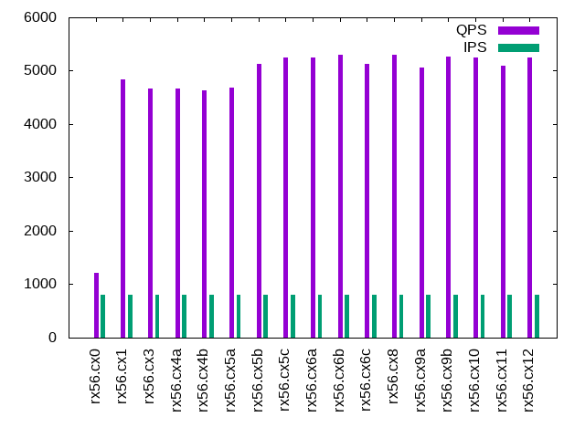

Introduction
This is a report for the insert benchmark with 500M docs and 1 client(s). It is generated by scripts (bash, awk, sed) and Tufte might not be impressed. An overview of the insert benchmark is here and a short update is here. Below, by DBMS, I mean DBMS+version.config. An example is my8020.c10b40 where my means MySQL, 8020 is version 8.0.20 and c10b40 is the name for the configuration file. All configurations are stored here.
The test server is described here. Clients and the DBMS shared the same host running Ubuntu 18.04.5. All tests used MyRocks with MySQL 5.6.35. The configurations for MyRocks are here.
Contents
- Summary
- l.i0: load without secondary indexes
- l.x: create secondary indexes
- l.i1: continue load after secondary indexes created
- q100.2: range queries with 100 insert/s per client, 2nd loop
- q200.2: range queries with 200 insert/s per client, 2nd loop
- q400.2: range queries with 400 insert/s per client, 2nd loop
- q600.2: range queries with 600 insert/s per client, 2nd loop
- q800.2: range queries with 800 insert/s per client, 2nd loop
- q1000.2: range queries with 1000 insert/s per client, 2nd loop
Summary
The numbers are inserts/s for l.i0 and l.i1, indexed docs (or rows) /s for l.x and queries/s for q*.2. The values are the average rate over the entire test for inserts (IPS) and queries (QPS). The range of values for IPS and QPS is split into 3 parts: bottom 25%, middle 50%, top 25%. Values in the bottom 25% have a red background, values in the top 25% have a green background and values in the middle have no color. A gray background is used for values that can be ignored because the DBMS did not sustain the target insert rate. Red backgrounds are not used when the minimum value is within 80% of the max value.
| dbms | l.i0 | l.x | l.i1 | q100.2 | q200.2 | q400.2 | q600.2 | q800.2 | q1000.2 |
|---|---|---|---|---|---|---|---|---|---|
| rx56.cx0 | 104515 | 98522 | 37453 | 1243 | 1243 | 1212 | 1198 | 1221 | 1195 |
| rx56.cx1 | 105641 | 97013 | 37736 | 4991 | 5140 | 5118 | 4870 | 4844 | 4782 |
| rx56.cx3 | 103972 | 97163 | 38910 | 4859 | 4830 | 4715 | 4709 | 4662 | 4574 |
| rx56.cx4a | 104188 | 97107 | 38910 | 5018 | 4998 | 4770 | 4688 | 4668 | 4614 |
| rx56.cx4b | 104668 | 96806 | 42017 | 5039 | 4959 | 4797 | 4705 | 4624 | 4645 |
| rx56.cx5a | 105108 | 96544 | 42017 | 4980 | 4881 | 4749 | 4710 | 4689 | 4664 |
| rx56.cx5b | 105641 | 96526 | 42735 | 5494 | 5410 | 5368 | 5291 | 5132 | 5217 |
| rx56.cx5c | 105042 | 97182 | 41667 | 5444 | 4984 | 5365 | 5305 | 5251 | 5199 |
| rx56.cx6a | 106180 | 99285 | 42373 | 5378 | 5374 | 5337 | 5286 | 5249 | 5183 |
| rx56.cx6b | 103455 | 94270 | 42373 | 5497 | 5382 | 5424 | 5394 | 5304 | 5078 |
| rx56.cx6c | 104015 | 86898 | 42373 | 5417 | 5437 | 5323 | 5360 | 5131 | 5154 |
| rx56.cx8 | 105619 | 94932 | 42194 | 5529 | 5390 | 5441 | 5322 | 5292 | 4992 |
| rx56.cx9a | 104210 | 95878 | 42017 | 5418 | 5290 | 5266 | 5227 | 5063 | 5118 |
| rx56.cx9b | 104559 | 97600 | 42373 | 5281 | 5360 | 5293 | 5302 | 5269 | 5074 |
| rx56.cx10 | 103864 | 94806 | 41841 | 5442 | 5352 | 4861 | 5370 | 5252 | 5058 |
| rx56.cx11 | 103455 | 95166 | 42194 | 5397 | 5356 | 5354 | 5213 | 5086 | 4958 |
| rx56.cx12 | 103348 | 95004 | 42373 | 5272 | 5064 | 5363 | 5338 | 5254 | 5019 |
This lists the average rate of inserts/s for the tests that do inserts concurrent with queries. For such tests the query rate is listed in the table above. The read+write tests are setup so that the insert rate should match the target rate every second. Cells that are not at least 95% of the target have a red background to indicate a failure to satisfy the target.
| dbms | q100.2 | q200.2 | q400.2 | q600.2 | q800.2 | q1000.2 |
|---|---|---|---|---|---|---|
| rx56.cx0 | 100 | 200 | 399 | 599 | 799 | 998 |
| rx56.cx1 | 100 | 200 | 399 | 599 | 799 | 998 |
| rx56.cx3 | 100 | 200 | 399 | 599 | 799 | 998 |
| rx56.cx4a | 100 | 200 | 399 | 599 | 799 | 998 |
| rx56.cx4b | 100 | 200 | 399 | 599 | 799 | 998 |
| rx56.cx5a | 100 | 200 | 399 | 599 | 799 | 998 |
| rx56.cx5b | 100 | 200 | 399 | 599 | 799 | 998 |
| rx56.cx5c | 100 | 200 | 399 | 599 | 799 | 998 |
| rx56.cx6a | 100 | 200 | 399 | 599 | 799 | 998 |
| rx56.cx6b | 100 | 200 | 399 | 599 | 799 | 998 |
| rx56.cx6c | 100 | 200 | 399 | 599 | 799 | 998 |
| rx56.cx8 | 100 | 200 | 399 | 599 | 799 | 998 |
| rx56.cx9a | 100 | 200 | 399 | 599 | 799 | 998 |
| rx56.cx9b | 100 | 200 | 399 | 599 | 799 | 998 |
| rx56.cx10 | 100 | 200 | 399 | 599 | 799 | 998 |
| rx56.cx11 | 100 | 200 | 399 | 599 | 799 | 998 |
| rx56.cx12 | 100 | 200 | 399 | 599 | 799 | 998 |
| target | 100 | 200 | 400 | 600 | 800 | 1000 |
l.i0
l.i0: load without secondary indexes. Graphs for performance per 1-second interval are here.
Average throughput:

Insert response time histogram: each cell has the percentage of responses that take <= the time in the header and max is the max response time in seconds. For the max column values in the top 25% of the range have a red background and in the bottom 25% of the range have a green background. The red background is not used when the min value is within 80% of the max value.
| dbms | 256us | 1ms | 4ms | 16ms | 64ms | 256ms | 1s | 4s | 16s | gt | max |
|---|---|---|---|---|---|---|---|---|---|---|---|
| rx56.cx0 | 96.453 | 3.496 | 0.047 | nonzero | 0.004 | 0.146 | |||||
| rx56.cx1 | 96.650 | 3.299 | 0.048 | nonzero | 0.004 | 0.140 | |||||
| rx56.cx3 | 96.579 | 3.372 | 0.045 | nonzero | 0.004 | 0.137 | |||||
| rx56.cx4a | 96.466 | 3.485 | 0.045 | nonzero | 0.004 | 0.148 | |||||
| rx56.cx4b | 96.835 | 3.109 | 0.052 | nonzero | 0.004 | 0.170 | |||||
| rx56.cx5a | 96.735 | 3.211 | 0.050 | nonzero | 0.004 | 0.157 | |||||
| rx56.cx5b | 96.453 | 3.492 | 0.051 | nonzero | 0.004 | 0.197 | |||||
| rx56.cx5c | 95.932 | 4.014 | 0.050 | nonzero | 0.004 | 0.144 | |||||
| rx56.cx6a | 96.836 | 3.112 | 0.048 | nonzero | 0.004 | 0.176 | |||||
| rx56.cx6b | 95.092 | 4.852 | 0.052 | nonzero | 0.004 | 0.161 | |||||
| rx56.cx6c | 94.181 | 5.762 | 0.053 | 0.001 | 0.004 | 0.178 | |||||
| rx56.cx8 | 95.970 | 3.974 | 0.052 | nonzero | 0.004 | 0.160 | |||||
| rx56.cx9a | 95.504 | 4.438 | 0.053 | 0.001 | 0.004 | 0.146 | |||||
| rx56.cx9b | 95.392 | 4.550 | 0.054 | nonzero | 0.004 | 0.227 | |||||
| rx56.cx10 | 94.910 | 5.014 | 0.072 | nonzero | 0.003 | 0.001 | 0.342 | ||||
| rx56.cx11 | 95.024 | 4.918 | 0.054 | nonzero | 0.004 | 0.176 | |||||
| rx56.cx12 | 95.043 | 4.897 | 0.056 | nonzero | 0.004 | 0.169 |
Performance metrics for the DBMS listed above. Some are normalized by throughput, others are not. Legend for results is here.
ips qps rps rkbps wkbps rpq rkbpq wkbpi csps cpups cspq cpupq dbgb1 dbgb2 rss maxop p50 p99 tag 104515 0 0 0 29218 0.000 0.000 0.280 10979 45.9 0.105 18 16.4 16.8 0.5 0.146 106183 90801 rx56.cx0 105641 0 0 0 29528 0.000 0.000 0.280 11129 46.1 0.105 17 16.4 16.8 0.6 0.140 107485 91100 rx56.cx1 103972 0 0 0 29066 0.000 0.000 0.280 10913 45.5 0.105 18 16.4 16.8 0.5 0.137 105588 88805 rx56.cx3 104188 0 0 0 29127 0.000 0.000 0.280 10944 45.9 0.105 18 16.4 16.8 0.5 0.148 105983 89302 rx56.cx4a 104668 0 0 0 123184 0.000 0.000 1.177 11016 45.8 0.105 18 17.0 17.4 1.1 0.170 106484 90302 rx56.cx4b 105108 0 0 0 28767 0.000 0.000 0.274 11045 45.8 0.105 17 17.0 19.7 1.4 0.157 106983 90900 rx56.cx5a 105641 0 0 0 28252 0.000 0.000 0.267 11079 46.0 0.105 17 17.0 23.0 1.9 0.197 107784 84910 rx56.cx5b 105042 0 0 0 26588 0.000 0.000 0.253 10950 45.9 0.104 17 17.0 29.6 2.5 0.144 107286 78516 rx56.cx5c 106180 0 0 0 31174 0.000 0.000 0.294 11126 45.9 0.105 17 24.9 37.6 2.5 0.176 108180 82011 rx56.cx6a 103455 0 0 0 39209 0.000 0.000 0.379 10936 46.1 0.106 18 16.4 29.1 2.7 0.161 106382 76219 rx56.cx6b 104015 0 0 0 39546 0.000 0.000 0.380 10964 47.1 0.105 18 13.1 25.8 2.7 0.178 107984 76516 rx56.cx6c 105619 0 0 0 40026 0.000 0.000 0.379 11172 46.5 0.106 18 16.4 29.1 2.6 0.160 108580 77614 rx56.cx8 104210 0 0 0 40611 0.000 0.000 0.390 11016 46.1 0.106 18 16.1 28.8 2.5 0.146 107026 77416 rx56.cx9a 104559 0 0 0 37500 0.000 0.000 0.359 11085 46.2 0.106 18 16.0 28.6 2.3 0.227 107386 78016 rx56.cx9b 103864 0 0 0 39373 0.000 0.000 0.379 10457 46.2 0.101 18 16.4 29.1 2.7 0.342 106973 75916 rx56.cx10 103455 0 0 0 39209 0.000 0.000 0.379 10952 46.3 0.106 18 16.4 29.1 2.7 0.176 106283 76043 rx56.cx11 103348 0 0 0 39169 0.000 0.000 0.379 10925 46.2 0.106 18 16.4 29.1 2.7 0.169 106283 76116 rx56.cx12
l.x
l.x: create secondary indexes.
Average throughput:
Performance metrics for the DBMS listed above. Some are normalized by throughput, others are not. Legend for results is here.
ips qps rps rkbps wkbps rpq rkbpq wkbpi csps cpups cspq cpupq dbgb1 dbgb2 rss maxop p50 p99 tag 98522 0 51 20062 33491 0.001 0.204 0.340 830 24.8 0.008 10 33.7 34.1 0.8 0.007 NA NA rx56.cx0 97013 0 52 21611 31378 0.001 0.223 0.323 853 24.7 0.009 10 33.7 34.1 11.6 0.010 NA NA rx56.cx1 97163 0 52 21642 33015 0.001 0.223 0.340 857 24.7 0.009 10 33.7 34.1 11.5 0.005 NA NA rx56.cx3 97107 0 52 21626 31405 0.001 0.223 0.323 850 24.7 0.009 10 33.7 34.1 10.5 0.008 NA NA rx56.cx4a 96806 0 52 21596 31965 0.001 0.223 0.330 850 24.7 0.009 10 34.3 34.6 11.6 0.009 NA NA rx56.cx4b 96544 0 52 21550 29611 0.001 0.223 0.307 859 24.7 0.009 10 34.3 37.0 11.9 0.009 NA NA rx56.cx5a 96526 0 51 21511 32027 0.001 0.223 0.332 864 24.7 0.009 10 34.3 40.3 12.4 0.015 NA NA rx56.cx5b 97182 0 50 21732 32978 0.001 0.224 0.339 870 24.7 0.009 10 34.2 46.9 13.0 0.005 NA NA rx56.cx5c 99285 0 71 27049 37459 0.001 0.272 0.377 950 24.8 0.010 10 54.5 67.2 13.0 0.010 NA NA rx56.cx6a 94270 0 49 21161 28124 0.001 0.224 0.298 856 24.7 0.009 10 33.7 46.4 13.0 0.008 NA NA rx56.cx6b 86898 0 38 17657 26590 0.000 0.203 0.306 804 24.7 0.009 11 25.0 37.7 12.9 0.006 NA NA rx56.cx6c 94932 0 49 21135 29929 0.001 0.223 0.315 851 24.7 0.009 10 33.7 46.4 12.9 0.006 NA NA rx56.cx8 95878 0 50 21198 31088 0.001 0.221 0.324 863 24.6 0.009 10 32.7 45.4 12.9 0.009 NA NA rx56.cx9a 97600 0 50 21442 33601 0.001 0.220 0.344 926 24.6 0.009 10 31.8 44.5 13.0 0.008 NA NA rx56.cx9b 94806 0 50 21814 28355 0.001 0.230 0.299 851 24.7 0.009 10 33.7 46.4 13.0 0.010 NA NA rx56.cx10 95166 0 50 21346 29900 0.001 0.224 0.314 854 24.7 0.009 10 33.7 46.4 13.0 0.008 NA NA rx56.cx11 95004 0 50 21832 29124 0.001 0.230 0.307 855 24.7 0.009 10 33.7 46.4 13.0 0.008 NA NA rx56.cx12
l.i1
l.i1: continue load after secondary indexes created. Graphs for performance per 1-second interval are here.
Average throughput:

Insert response time histogram: each cell has the percentage of responses that take <= the time in the header and max is the max response time in seconds. For the max column values in the top 25% of the range have a red background and in the bottom 25% of the range have a green background. The red background is not used when the min value is within 80% of the max value.
| dbms | 256us | 1ms | 4ms | 16ms | 64ms | 256ms | 1s | 4s | 16s | gt | max |
|---|---|---|---|---|---|---|---|---|---|---|---|
| rx56.cx0 | 2.599 | 97.309 | 0.090 | 0.003 | 0.034 | ||||||
| rx56.cx1 | 3.386 | 96.517 | 0.095 | 0.003 | 0.046 | ||||||
| rx56.cx3 | 3.295 | 96.594 | 0.107 | 0.003 | 0.061 | ||||||
| rx56.cx4a | 2.986 | 96.915 | 0.092 | 0.007 | 0.035 | ||||||
| rx56.cx4b | 9.338 | 90.567 | 0.088 | 0.006 | 0.001 | 0.065 | |||||
| rx56.cx5a | 9.882 | 90.000 | 0.112 | 0.006 | 0.056 | ||||||
| rx56.cx5b | 10.878 | 89.022 | 0.096 | 0.005 | 0.052 | ||||||
| rx56.cx5c | 5.167 | 94.755 | 0.072 | 0.006 | 0.056 | ||||||
| rx56.cx6a | 6.159 | 93.763 | 0.072 | 0.006 | 0.057 | ||||||
| rx56.cx6b | 5.784 | 94.134 | 0.076 | 0.006 | 0.001 | 0.066 | |||||
| rx56.cx6c | 5.135 | 94.785 | 0.075 | 0.006 | 0.057 | ||||||
| rx56.cx8 | 4.999 | 94.918 | 0.075 | 0.007 | 0.001 | 0.068 | |||||
| rx56.cx9a | 4.603 | 95.310 | 0.080 | 0.006 | 0.001 | 0.065 | |||||
| rx56.cx9b | 4.646 | 95.265 | 0.081 | 0.006 | 0.002 | 0.088 | |||||
| rx56.cx10 | 5.322 | 94.578 | 0.097 | 0.002 | 0.001 | 0.065 | |||||
| rx56.cx11 | 5.105 | 94.812 | 0.076 | 0.006 | 0.001 | 0.088 | |||||
| rx56.cx12 | 4.991 | 94.926 | 0.076 | 0.006 | 0.001 | 0.082 |
Performance metrics for the DBMS listed above. Some are normalized by throughput, others are not. Legend for results is here.
ips qps rps rkbps wkbps rpq rkbpq wkbpi csps cpups cspq cpupq dbgb1 dbgb2 rss maxop p50 p99 tag 37453 0 2 214 38965 0.000 0.006 1.040 7961 40.3 0.213 43 34.6 36.2 0.8 0.034 37309 30566 rx56.cx0 37736 0 2 214 39513 0.000 0.006 1.047 8029 40.2 0.213 43 34.6 36.2 11.6 0.046 37310 30316 rx56.cx1 38910 0 0 0 82185 0.000 0.000 2.112 8986 50.6 0.231 52 34.6 36.2 11.6 0.061 38957 30417 rx56.cx3 38910 0 0 0 81870 0.000 0.000 2.104 8912 50.4 0.229 52 34.6 36.2 10.6 0.035 38659 29418 rx56.cx4a 42017 0 0 0 88472 0.000 0.000 2.106 9403 52.9 0.224 50 35.2 36.8 10.8 0.065 42503 32264 rx56.cx4b 42017 0 0 0 104667 0.000 0.000 2.491 9745 53.0 0.232 50 35.2 35.7 11.0 0.056 42605 32288 rx56.cx5a 42735 0 0 0 101748 0.000 0.000 2.381 9366 48.7 0.219 46 35.3 35.7 11.5 0.052 43452 31615 rx56.cx5b 41667 0 0 0 108111 0.000 0.000 2.595 8838 42.9 0.212 41 35.1 35.6 12.0 0.056 42153 32764 rx56.cx5c 42373 0 0 0 125354 0.000 0.000 2.958 8964 41.2 0.212 39 55.7 56.3 11.9 0.057 42103 33964 rx56.cx6a 42373 0 0 0 124452 0.000 0.000 2.937 9074 40.9 0.214 39 35.0 35.5 13.0 0.066 42421 34162 rx56.cx6b 42373 0 0 0 123483 0.000 0.000 2.914 9064 40.7 0.214 38 26.3 26.8 13.0 0.057 42655 32015 rx56.cx6c 42194 0 0 0 124366 0.000 0.000 2.947 9072 40.7 0.215 39 34.9 35.5 13.0 0.068 42254 32613 rx56.cx8 42017 0 0 0 125077 0.000 0.000 2.977 8966 40.5 0.213 39 33.9 34.4 13.0 0.065 42102 32565 rx56.cx9a 42373 0 0 0 121401 0.000 0.000 2.865 9154 40.6 0.216 38 33.0 33.6 13.0 0.088 42068 35811 rx56.cx9b 41841 0 0 0 124360 0.000 0.000 2.972 8172 40.7 0.195 39 35.0 35.5 13.0 0.065 42004 33315 rx56.cx10 42194 0 0 0 123780 0.000 0.000 2.934 9062 40.9 0.215 39 35.0 35.5 13.0 0.088 42104 33028 rx56.cx11 42373 0 0 0 124420 0.000 0.000 2.936 9207 40.8 0.217 39 35.0 35.5 13.0 0.082 42355 33876 rx56.cx12
q100.2
q100.2: range queries with 100 insert/s per client, 2nd loop. Graphs for performance per 1-second interval are here.
Average throughput:
Query response time histogram: each cell has the percentage of responses that take <= the time in the header and max is the max response time in seconds. For max values in the top 25% of the range have a red background and in the bottom 25% of the range have a green background. The red background is not used when the min value is within 80% of the max value.
| dbms | 256us | 1ms | 4ms | 16ms | 64ms | 256ms | 1s | 4s | 16s | gt | max |
|---|---|---|---|---|---|---|---|---|---|---|---|
| rx56.cx0 | 21.445 | 45.949 | 32.601 | 0.005 | nonzero | 0.016 | |||||
| rx56.cx1 | 99.639 | 0.361 | nonzero | nonzero | 0.014 | ||||||
| rx56.cx3 | 99.623 | 0.376 | nonzero | nonzero | 0.014 | ||||||
| rx56.cx4a | 99.649 | 0.351 | nonzero | nonzero | 0.014 | ||||||
| rx56.cx4b | 99.685 | 0.315 | nonzero | nonzero | 0.014 | ||||||
| rx56.cx5a | 99.638 | 0.362 | nonzero | nonzero | 0.014 | ||||||
| rx56.cx5b | 99.789 | 0.211 | nonzero | nonzero | 0.014 | ||||||
| rx56.cx5c | 99.761 | 0.239 | nonzero | nonzero | 0.014 | ||||||
| rx56.cx6a | 99.713 | 0.287 | nonzero | nonzero | 0.014 | ||||||
| rx56.cx6b | 99.790 | 0.209 | nonzero | nonzero | 0.014 | ||||||
| rx56.cx6c | 99.760 | 0.240 | nonzero | 0.003 | |||||||
| rx56.cx8 | 99.802 | 0.198 | nonzero | nonzero | nonzero | 0.161 | |||||
| rx56.cx9a | 99.739 | 0.261 | nonzero | nonzero | 0.010 | ||||||
| rx56.cx9b | 99.724 | 0.276 | nonzero | nonzero | 0.014 | ||||||
| rx56.cx10 | 99.765 | 0.234 | nonzero | nonzero | 0.014 | ||||||
| rx56.cx11 | 99.731 | 0.269 | nonzero | nonzero | 0.014 | ||||||
| rx56.cx12 | 99.728 | 0.272 | nonzero | nonzero | 0.014 |
Insert response time histogram: each cell has the percentage of responses that take <= the time in the header and max is the max response time in seconds. For max values in the top 25% of the range have a red background and in the bottom 25% of the range have a green background. The red background is not used when the min value is within 80% of the max value.
| dbms | 256us | 1ms | 4ms | 16ms | 64ms | 256ms | 1s | 4s | 16s | gt | max |
|---|---|---|---|---|---|---|---|---|---|---|---|
| rx56.cx0 | 99.944 | 0.056 | 0.004 | ||||||||
| rx56.cx1 | 99.972 | 0.028 | 0.004 | ||||||||
| rx56.cx3 | 0.028 | 99.889 | 0.083 | 0.007 | |||||||
| rx56.cx4a | 99.917 | 0.083 | 0.005 | ||||||||
| rx56.cx4b | 0.389 | 99.583 | 0.028 | 0.004 | |||||||
| rx56.cx5a | 0.889 | 99.083 | 0.028 | 0.004 | |||||||
| rx56.cx5b | 0.944 | 99.000 | 0.056 | 0.007 | |||||||
| rx56.cx5c | 3.167 | 96.833 | 0.004 | ||||||||
| rx56.cx6a | 1.639 | 98.306 | 0.056 | 0.013 | |||||||
| rx56.cx6b | 1.611 | 98.333 | 0.056 | 0.013 | |||||||
| rx56.cx6c | 1.389 | 98.528 | 0.083 | 0.013 | |||||||
| rx56.cx8 | 1.222 | 98.722 | 0.056 | 0.012 | |||||||
| rx56.cx9a | 0.944 | 98.917 | 0.139 | 0.012 | |||||||
| rx56.cx9b | 0.917 | 99.028 | 0.056 | 0.013 | |||||||
| rx56.cx10 | 2.083 | 97.861 | 0.056 | 0.013 | |||||||
| rx56.cx11 | 1.639 | 98.306 | 0.056 | 0.007 | |||||||
| rx56.cx12 | 0.611 | 99.333 | 0.056 | 0.013 |
Performance metrics for the DBMS listed above. Some are normalized by throughput, others are not. Legend for results is here.
ips qps rps rkbps wkbps rpq rkbpq wkbpi csps cpups cspq cpupq dbgb1 dbgb2 rss maxop p50 p99 tag 100 1243 0 1 63 0.000 0.000 0.628 4844 24.5 3.897 788 34.6 36.2 0.9 0.016 1247 1151 rx56.cx0 100 4991 0 0 63 0.000 0.000 0.627 19144 24.7 3.836 198 34.6 36.2 11.7 0.014 4939 4731 rx56.cx1 100 4859 0 0 348 0.000 0.000 3.482 18650 24.4 3.838 201 34.6 36.2 11.7 0.014 4859 4731 rx56.cx3 100 5018 0 0 347 0.000 0.000 3.481 19258 24.6 3.838 196 34.6 36.2 10.8 0.014 5018 4859 rx56.cx4a 100 5039 0 0 369 0.000 0.000 3.700 19337 24.8 3.837 197 35.2 36.9 11.2 0.014 5050 4779 rx56.cx4b 100 4980 0 0 369 0.000 0.000 3.700 19112 24.6 3.838 198 35.2 35.7 11.3 0.014 4986 4811 rx56.cx5a 100 5494 0 0 854 0.000 0.000 8.558 21087 26.0 3.838 189 35.2 35.7 11.9 0.014 5498 5322 rx56.cx5b 100 5444 0 0 884 0.000 0.000 8.858 20904 26.0 3.840 191 35.2 35.8 12.0 0.014 5450 5146 rx56.cx5c 100 5378 0 0 1107 0.000 0.000 11.097 20688 26.0 3.847 193 55.9 56.4 12.0 0.014 5402 5098 rx56.cx6a 100 5497 0 0 1108 0.000 0.000 11.099 21105 25.9 3.839 188 35.1 35.7 11.7 0.014 5514 5290 rx56.cx6b 100 5417 0 0 1283 0.000 0.000 12.857 20811 26.0 3.842 192 26.3 26.9 12.8 0.003 5434 5210 rx56.cx6c 100 5529 0 4 1107 0.000 0.001 11.091 21231 25.9 3.840 187 35.1 35.7 11.6 0.161 5532 5354 rx56.cx8 100 5418 1 143 1069 0.000 0.026 10.707 20822 26.0 3.843 192 34.0 34.6 12.8 0.010 5434 5210 rx56.cx9a 100 5281 1 159 1069 0.000 0.030 10.711 20282 25.3 3.841 192 33.2 33.7 12.8 0.014 5466 4827 rx56.cx9b 100 5442 0 2 1108 0.000 0.000 11.098 20874 25.9 3.835 190 35.1 35.7 12.8 0.014 5450 5258 rx56.cx10 100 5397 0 0 1108 0.000 0.000 11.099 20726 25.9 3.840 192 35.1 35.7 11.8 0.014 5418 5194 rx56.cx11 100 5272 0 4 1108 0.000 0.001 11.098 20247 25.4 3.840 193 35.1 35.7 12.8 0.014 5466 4795 rx56.cx12
q200.2
q200.2: range queries with 200 insert/s per client, 2nd loop. Graphs for performance per 1-second interval are here.
Average throughput:
Query response time histogram: each cell has the percentage of responses that take <= the time in the header and max is the max response time in seconds. For max values in the top 25% of the range have a red background and in the bottom 25% of the range have a green background. The red background is not used when the min value is within 80% of the max value.
| dbms | 256us | 1ms | 4ms | 16ms | 64ms | 256ms | 1s | 4s | 16s | gt | max |
|---|---|---|---|---|---|---|---|---|---|---|---|
| rx56.cx0 | 25.406 | 42.062 | 32.531 | 0.002 | 0.016 | ||||||
| rx56.cx1 | 99.651 | 0.349 | nonzero | nonzero | 0.014 | ||||||
| rx56.cx3 | 99.589 | 0.411 | nonzero | 0.002 | |||||||
| rx56.cx4a | 99.627 | 0.373 | nonzero | 0.002 | |||||||
| rx56.cx4b | 99.649 | 0.351 | nonzero | 0.003 | |||||||
| rx56.cx5a | 99.637 | 0.363 | nonzero | nonzero | 0.004 | ||||||
| rx56.cx5b | 99.765 | 0.235 | nonzero | 0.002 | |||||||
| rx56.cx5c | 99.660 | 0.340 | nonzero | 0.002 | |||||||
| rx56.cx6a | 99.721 | 0.279 | nonzero | 0.002 | |||||||
| rx56.cx6b | 99.714 | 0.286 | nonzero | nonzero | 0.008 | ||||||
| rx56.cx6c | 99.770 | 0.230 | nonzero | nonzero | 0.031 | ||||||
| rx56.cx8 | 99.733 | 0.267 | nonzero | nonzero | 0.014 | ||||||
| rx56.cx9a | 99.736 | 0.264 | nonzero | 0.002 | |||||||
| rx56.cx9b | 99.735 | 0.265 | nonzero | 0.002 | |||||||
| rx56.cx10 | 99.704 | 0.296 | nonzero | 0.003 | |||||||
| rx56.cx11 | 99.732 | 0.268 | nonzero | nonzero | 0.009 | ||||||
| rx56.cx12 | 99.689 | 0.311 | nonzero | nonzero | 0.008 |
Insert response time histogram: each cell has the percentage of responses that take <= the time in the header and max is the max response time in seconds. For max values in the top 25% of the range have a red background and in the bottom 25% of the range have a green background. The red background is not used when the min value is within 80% of the max value.
| dbms | 256us | 1ms | 4ms | 16ms | 64ms | 256ms | 1s | 4s | 16s | gt | max |
|---|---|---|---|---|---|---|---|---|---|---|---|
| rx56.cx0 | 99.944 | 0.056 | 0.007 | ||||||||
| rx56.cx1 | 99.944 | 0.056 | 0.005 | ||||||||
| rx56.cx3 | 99.972 | 0.028 | 0.004 | ||||||||
| rx56.cx4a | 99.944 | 0.056 | 0.004 | ||||||||
| rx56.cx4b | 0.194 | 99.778 | 0.028 | 0.004 | |||||||
| rx56.cx5a | 0.431 | 99.542 | 0.028 | 0.004 | |||||||
| rx56.cx5b | 1.875 | 98.111 | 0.014 | 0.007 | |||||||
| rx56.cx5c | 99.944 | 0.056 | 0.004 | ||||||||
| rx56.cx6a | 99.972 | 0.028 | 0.004 | ||||||||
| rx56.cx6b | 99.986 | 0.014 | 0.004 | ||||||||
| rx56.cx6c | 99.972 | 0.028 | 0.004 | ||||||||
| rx56.cx8 | 100.000 | 0.004 | |||||||||
| rx56.cx9a | 99.972 | 0.028 | 0.004 | ||||||||
| rx56.cx9b | 99.917 | 0.083 | 0.007 | ||||||||
| rx56.cx10 | 99.903 | 0.097 | 0.010 | ||||||||
| rx56.cx11 | 99.986 | 0.014 | 0.004 | ||||||||
| rx56.cx12 | 99.944 | 0.056 | 0.004 |
Performance metrics for the DBMS listed above. Some are normalized by throughput, others are not. Legend for results is here.
ips qps rps rkbps wkbps rpq rkbpq wkbpi csps cpups cspq cpupq dbgb1 dbgb2 rss maxop p50 p99 tag 200 1243 0 0 601 0.000 0.000 3.013 4871 24.6 3.920 792 34.6 36.4 0.9 0.016 1247 1135 rx56.cx0 200 5140 0 0 601 0.000 0.000 3.013 19744 25.5 3.841 198 34.6 36.4 11.7 0.014 5338 4459 rx56.cx1 200 4830 0 0 590 0.000 0.000 2.957 18559 24.5 3.842 203 34.6 36.4 11.7 0.002 4827 4699 rx56.cx3 200 4998 0 0 590 0.000 0.000 2.957 19202 24.6 3.842 197 34.6 36.4 10.9 0.002 5002 4845 rx56.cx4a 200 4959 0 0 377 0.000 0.000 1.891 19041 24.5 3.840 198 35.3 37.0 11.3 0.003 4970 4763 rx56.cx4b 200 4881 0 0 377 0.000 0.000 1.891 18743 24.4 3.840 200 35.3 35.9 11.4 0.004 4875 4763 rx56.cx5a 200 5410 0 0 862 0.000 0.000 4.318 20781 26.0 3.841 192 35.3 35.9 12.0 0.002 5418 5226 rx56.cx5b 200 4984 0 0 43 0.000 0.000 0.215 19130 24.3 3.838 195 35.2 35.9 12.2 0.002 5002 4831 rx56.cx5c 200 5374 0 0 43 0.000 0.000 0.215 20620 25.8 3.837 192 55.9 56.5 12.2 0.002 5386 5258 rx56.cx6a 200 5382 0 0 43 0.000 0.000 0.216 20659 25.8 3.839 192 35.1 35.8 11.9 0.008 5386 5274 rx56.cx6b 200 5437 0 0 43 0.000 0.000 0.215 20854 25.8 3.836 190 26.3 27.0 13.0 0.031 5450 5306 rx56.cx6c 200 5390 0 0 43 0.000 0.000 0.216 20679 25.8 3.837 191 35.1 35.7 11.8 0.014 5386 5274 rx56.cx8 200 5290 0 0 43 0.000 0.000 0.215 20300 25.7 3.837 194 34.0 34.7 12.9 0.002 5290 5162 rx56.cx9a 200 5360 0 0 43 0.000 0.000 0.215 20562 25.7 3.836 192 33.2 33.8 12.9 0.002 5370 5242 rx56.cx9b 200 5352 0 0 43 0.000 0.000 0.216 20554 25.7 3.840 192 35.1 35.8 13.0 0.003 5358 5226 rx56.cx10 200 5356 0 0 43 0.000 0.000 0.215 20548 25.7 3.837 192 35.1 35.8 11.9 0.009 5354 5242 rx56.cx11 200 5064 0 0 43 0.000 0.000 0.215 19439 24.7 3.838 195 35.1 35.8 13.0 0.008 5067 4906 rx56.cx12
q400.2
q400.2: range queries with 400 insert/s per client, 2nd loop. Graphs for performance per 1-second interval are here.
Average throughput:
Query response time histogram: each cell has the percentage of responses that take <= the time in the header and max is the max response time in seconds. For max values in the top 25% of the range have a red background and in the bottom 25% of the range have a green background. The red background is not used when the min value is within 80% of the max value.
| dbms | 256us | 1ms | 4ms | 16ms | 64ms | 256ms | 1s | 4s | 16s | gt | max |
|---|---|---|---|---|---|---|---|---|---|---|---|
| rx56.cx0 | 24.309 | 43.991 | 31.700 | 0.001 | 0.011 | ||||||
| rx56.cx1 | 99.411 | 0.588 | nonzero | 0.003 | |||||||
| rx56.cx3 | 99.221 | 0.779 | 0.001 | nonzero | 0.007 | ||||||
| rx56.cx4a | 99.255 | 0.744 | 0.001 | nonzero | 0.009 | ||||||
| rx56.cx4b | 99.288 | 0.711 | 0.001 | 0.004 | |||||||
| rx56.cx5a | 99.249 | 0.750 | 0.001 | nonzero | 0.008 | ||||||
| rx56.cx5b | 99.530 | 0.470 | 0.001 | nonzero | 0.009 | ||||||
| rx56.cx5c | 99.535 | 0.464 | 0.001 | nonzero | 0.010 | ||||||
| rx56.cx6a | 99.511 | 0.489 | 0.001 | nonzero | 0.008 | ||||||
| rx56.cx6b | 99.570 | 0.430 | nonzero | nonzero | 0.007 | ||||||
| rx56.cx6c | 99.524 | 0.475 | nonzero | nonzero | 0.012 | ||||||
| rx56.cx8 | 99.584 | 0.415 | 0.001 | nonzero | 0.012 | ||||||
| rx56.cx9a | 99.489 | 0.510 | 0.001 | nonzero | 0.010 | ||||||
| rx56.cx9b | 99.489 | 0.510 | nonzero | nonzero | 0.012 | ||||||
| rx56.cx10 | 99.345 | 0.654 | nonzero | nonzero | 0.012 | ||||||
| rx56.cx11 | 99.543 | 0.457 | nonzero | 0.002 | |||||||
| rx56.cx12 | 99.521 | 0.478 | nonzero | nonzero | 0.008 |
Insert response time histogram: each cell has the percentage of responses that take <= the time in the header and max is the max response time in seconds. For max values in the top 25% of the range have a red background and in the bottom 25% of the range have a green background. The red background is not used when the min value is within 80% of the max value.
| dbms | 256us | 1ms | 4ms | 16ms | 64ms | 256ms | 1s | 4s | 16s | gt | max |
|---|---|---|---|---|---|---|---|---|---|---|---|
| rx56.cx0 | 99.951 | 0.049 | 0.004 | ||||||||
| rx56.cx1 | 0.007 | 99.979 | 0.014 | 0.004 | |||||||
| rx56.cx3 | 99.951 | 0.049 | 0.008 | ||||||||
| rx56.cx4a | 99.958 | 0.042 | 0.004 | ||||||||
| rx56.cx4b | 0.076 | 99.875 | 0.049 | 0.004 | |||||||
| rx56.cx5a | 1.049 | 98.931 | 0.021 | 0.004 | |||||||
| rx56.cx5b | 2.285 | 97.694 | 0.021 | 0.007 | |||||||
| rx56.cx5c | 3.007 | 96.951 | 0.042 | 0.013 | |||||||
| rx56.cx6a | 1.396 | 98.576 | 0.028 | 0.013 | |||||||
| rx56.cx6b | 1.549 | 98.424 | 0.028 | 0.013 | |||||||
| rx56.cx6c | 1.576 | 98.375 | 0.049 | 0.004 | |||||||
| rx56.cx8 | 0.931 | 99.042 | 0.028 | 0.006 | |||||||
| rx56.cx9a | 1.583 | 98.389 | 0.028 | 0.013 | |||||||
| rx56.cx9b | 1.562 | 98.417 | 0.021 | 0.004 | |||||||
| rx56.cx10 | 1.347 | 98.611 | 0.042 | 0.007 | |||||||
| rx56.cx11 | 1.000 | 98.972 | 0.028 | 0.013 | |||||||
| rx56.cx12 | 1.493 | 98.493 | 0.014 | 0.013 |
Performance metrics for the DBMS listed above. Some are normalized by throughput, others are not. Legend for results is here.
ips qps rps rkbps wkbps rpq rkbpq wkbpi csps cpups cspq cpupq dbgb1 dbgb2 rss maxop p50 p99 tag 399 1212 0 0 771 0.000 0.000 1.931 4789 24.8 3.952 819 34.8 36.7 0.9 0.011 1215 1055 rx56.cx0 399 5118 0 0 771 0.000 0.000 1.932 19695 25.4 3.848 199 34.8 36.7 11.6 0.003 5162 4491 rx56.cx1 399 4715 0 0 1310 0.000 0.000 3.280 18171 24.7 3.854 210 34.8 36.7 11.7 0.007 4715 4539 rx56.cx3 399 4770 0 0 1309 0.000 0.000 3.279 18378 24.8 3.853 208 34.8 36.7 10.9 0.009 4779 4587 rx56.cx4a 399 4797 0 0 1440 0.000 0.000 3.607 18483 24.8 3.853 207 35.4 37.3 10.5 0.004 4795 4619 rx56.cx4b 399 4749 0 0 1440 0.000 0.000 3.606 18306 24.7 3.855 208 35.4 36.2 11.5 0.008 4747 4587 rx56.cx5a 399 5368 0 0 1627 0.000 0.000 4.074 20672 26.3 3.851 196 35.4 36.2 11.1 0.009 5386 5071 rx56.cx5b 399 5365 0 0 1016 0.000 0.000 2.544 20648 26.1 3.848 195 35.4 36.3 12.1 0.010 5374 5082 rx56.cx5c 399 5337 0 0 1246 0.000 0.000 3.120 20548 26.0 3.850 195 56.1 57.0 12.1 0.008 5338 5130 rx56.cx6a 399 5424 0 0 1246 0.000 0.000 3.120 20878 26.1 3.849 192 35.4 36.2 11.9 0.007 5434 5242 rx56.cx6b 399 5323 0 0 1245 0.000 0.000 3.119 20492 26.0 3.850 195 26.5 27.4 11.7 0.012 5322 5162 rx56.cx6c 399 5441 0 0 1245 0.000 0.000 3.117 20942 26.1 3.849 192 35.3 36.2 11.8 0.012 5450 5290 rx56.cx8 399 5266 0 0 1206 0.000 0.000 3.020 20270 26.0 3.849 197 34.3 35.2 11.7 0.010 5274 5098 rx56.cx9a 399 5293 0 0 1205 0.000 0.000 3.017 20381 26.0 3.851 196 33.4 34.3 11.6 0.012 5290 5146 rx56.cx9b 399 4861 0 0 1245 0.000 0.000 3.119 18695 24.8 3.846 204 35.4 36.2 12.8 0.012 4827 4715 rx56.cx10 399 5354 0 0 1246 0.000 0.000 3.119 20609 26.1 3.850 195 35.4 36.2 11.9 0.002 5354 5210 rx56.cx11 399 5363 0 0 1246 0.000 0.000 3.119 20643 26.1 3.849 195 35.4 36.2 12.8 0.008 5370 5178 rx56.cx12
q600.2
q600.2: range queries with 600 insert/s per client, 2nd loop. Graphs for performance per 1-second interval are here.
Average throughput:
Query response time histogram: each cell has the percentage of responses that take <= the time in the header and max is the max response time in seconds. For max values in the top 25% of the range have a red background and in the bottom 25% of the range have a green background. The red background is not used when the min value is within 80% of the max value.
| dbms | 256us | 1ms | 4ms | 16ms | 64ms | 256ms | 1s | 4s | 16s | gt | max |
|---|---|---|---|---|---|---|---|---|---|---|---|
| rx56.cx0 | 18.944 | 49.413 | 31.642 | 0.001 | nonzero | 0.020 | |||||
| rx56.cx1 | 99.051 | 0.948 | 0.001 | 0.003 | |||||||
| rx56.cx3 | 98.973 | 1.026 | 0.001 | 0.002 | |||||||
| rx56.cx4a | 98.954 | 1.044 | 0.001 | 0.004 | |||||||
| rx56.cx4b | 99.031 | 0.968 | 0.001 | 0.003 | |||||||
| rx56.cx5a | 99.007 | 0.991 | 0.001 | nonzero | 0.004 | ||||||
| rx56.cx5b | 99.355 | 0.644 | 0.001 | nonzero | 0.006 | ||||||
| rx56.cx5c | 99.350 | 0.650 | 0.001 | nonzero | 0.008 | ||||||
| rx56.cx6a | 99.337 | 0.662 | 0.001 | 0.003 | |||||||
| rx56.cx6b | 99.420 | 0.579 | 0.001 | 0.002 | |||||||
| rx56.cx6c | 99.393 | 0.606 | 0.001 | 0.003 | |||||||
| rx56.cx8 | 99.378 | 0.621 | 0.001 | 0.003 | |||||||
| rx56.cx9a | 99.321 | 0.678 | 0.001 | nonzero | 0.008 | ||||||
| rx56.cx9b | 99.362 | 0.637 | 0.001 | nonzero | 0.006 | ||||||
| rx56.cx10 | 99.386 | 0.613 | 0.001 | 0.003 | |||||||
| rx56.cx11 | 99.300 | 0.699 | 0.001 | 0.003 | |||||||
| rx56.cx12 | 99.371 | 0.628 | 0.001 | 0.003 |
Insert response time histogram: each cell has the percentage of responses that take <= the time in the header and max is the max response time in seconds. For max values in the top 25% of the range have a red background and in the bottom 25% of the range have a green background. The red background is not used when the min value is within 80% of the max value.
| dbms | 256us | 1ms | 4ms | 16ms | 64ms | 256ms | 1s | 4s | 16s | gt | max |
|---|---|---|---|---|---|---|---|---|---|---|---|
| rx56.cx0 | 0.014 | 99.949 | 0.037 | 0.004 | |||||||
| rx56.cx1 | 0.125 | 99.852 | 0.023 | 0.004 | |||||||
| rx56.cx3 | 99.940 | 0.060 | 0.009 | ||||||||
| rx56.cx4a | 0.005 | 99.963 | 0.032 | 0.004 | |||||||
| rx56.cx4b | 0.472 | 99.505 | 0.023 | 0.004 | |||||||
| rx56.cx5a | 0.667 | 99.282 | 0.051 | 0.004 | |||||||
| rx56.cx5b | 0.782 | 99.190 | 0.028 | 0.010 | |||||||
| rx56.cx5c | 1.042 | 98.935 | 0.023 | 0.007 | |||||||
| rx56.cx6a | 0.269 | 99.704 | 0.028 | 0.007 | |||||||
| rx56.cx6b | 0.190 | 99.796 | 0.014 | 0.004 | |||||||
| rx56.cx6c | 0.250 | 99.708 | 0.042 | 0.009 | |||||||
| rx56.cx8 | 0.333 | 99.653 | 0.014 | 0.004 | |||||||
| rx56.cx9a | 0.088 | 99.847 | 0.065 | 0.009 | |||||||
| rx56.cx9b | 0.241 | 99.731 | 0.028 | 0.004 | |||||||
| rx56.cx10 | 0.231 | 99.736 | 0.032 | 0.004 | |||||||
| rx56.cx11 | 0.208 | 99.759 | 0.032 | 0.004 | |||||||
| rx56.cx12 | 0.139 | 99.838 | 0.023 | 0.007 |
Performance metrics for the DBMS listed above. Some are normalized by throughput, others are not. Legend for results is here.
ips qps rps rkbps wkbps rpq rkbpq wkbpi csps cpups cspq cpupq dbgb1 dbgb2 rss maxop p50 p99 tag 599 1198 0 0 806 0.000 0.000 1.346 4777 24.9 3.986 831 34.9 35.1 0.9 0.020 1199 1087 rx56.cx0 599 4870 0 0 806 0.000 0.000 1.345 18778 25.1 3.856 206 34.9 35.1 11.7 0.003 4779 4443 rx56.cx1 599 4709 0 0 1478 0.000 0.000 2.468 18193 24.9 3.863 212 34.9 35.1 11.7 0.002 4715 4443 rx56.cx3 599 4688 0 0 1478 0.000 0.000 2.468 18111 24.9 3.863 212 34.9 35.1 11.0 0.004 4699 4507 rx56.cx4a 599 4705 0 0 1506 0.000 0.000 2.516 18181 24.9 3.864 212 35.6 35.8 10.8 0.003 4715 4523 rx56.cx4b 599 4710 0 0 1546 0.000 0.000 2.580 18189 24.8 3.862 211 35.6 36.6 10.6 0.004 4715 4523 rx56.cx5a 599 5291 0 0 646 0.000 0.000 1.079 20386 26.3 3.853 199 35.5 36.6 11.3 0.006 5293 5098 rx56.cx5b 599 5305 0 0 116 0.000 0.000 0.193 20424 26.0 3.850 196 35.5 36.6 12.5 0.008 5306 5146 rx56.cx5c 599 5286 0 0 115 0.000 0.000 0.193 20351 25.9 3.850 196 56.3 57.4 12.4 0.003 5290 5146 rx56.cx6a 599 5394 0 0 121 0.000 0.000 0.203 20762 26.1 3.849 194 35.5 36.6 12.3 0.002 5402 5274 rx56.cx6b 599 5360 0 0 116 0.000 0.000 0.193 20634 26.0 3.850 194 26.6 27.7 12.1 0.003 5370 5226 rx56.cx6c 599 5322 0 0 116 0.000 0.000 0.193 20491 26.0 3.850 195 35.5 36.6 12.1 0.003 5322 5178 rx56.cx8 599 5227 0 0 116 0.000 0.000 0.193 20123 25.7 3.850 197 34.4 35.5 12.0 0.008 5242 5082 rx56.cx9a 599 5302 0 0 116 0.000 0.000 0.194 20411 25.9 3.850 195 33.5 34.6 11.9 0.006 5306 5162 rx56.cx9b 599 5370 0 0 115 0.000 0.000 0.193 20673 26.1 3.850 194 35.5 36.6 11.9 0.003 5370 5226 rx56.cx10 599 5213 0 0 116 0.000 0.000 0.193 20073 25.6 3.851 196 35.5 36.6 12.2 0.003 5210 5082 rx56.cx11 599 5338 0 0 116 0.000 0.000 0.193 20548 26.3 3.849 197 35.5 36.6 11.9 0.003 5338 5210 rx56.cx12
q800.2
q800.2: range queries with 800 insert/s per client, 2nd loop. Graphs for performance per 1-second interval are here.
Average throughput:
Query response time histogram: each cell has the percentage of responses that take <= the time in the header and max is the max response time in seconds. For max values in the top 25% of the range have a red background and in the bottom 25% of the range have a green background. The red background is not used when the min value is within 80% of the max value.
| dbms | 256us | 1ms | 4ms | 16ms | 64ms | 256ms | 1s | 4s | 16s | gt | max |
|---|---|---|---|---|---|---|---|---|---|---|---|
| rx56.cx0 | 18.738 | 50.015 | 31.245 | 0.001 | 0.011 | ||||||
| rx56.cx1 | 98.823 | 1.175 | 0.002 | nonzero | 0.008 | ||||||
| rx56.cx3 | 98.704 | 1.294 | 0.002 | 0.004 | |||||||
| rx56.cx4a | 98.742 | 1.257 | 0.001 | 0.004 | |||||||
| rx56.cx4b | 98.699 | 1.298 | 0.003 | nonzero | 0.012 | ||||||
| rx56.cx5a | 98.797 | 1.201 | 0.002 | 0.003 | |||||||
| rx56.cx5b | 99.110 | 0.888 | 0.002 | nonzero | 0.012 | ||||||
| rx56.cx5c | 99.173 | 0.825 | 0.002 | nonzero | 0.008 | ||||||
| rx56.cx6a | 99.154 | 0.844 | 0.002 | 0.003 | |||||||
| rx56.cx6b | 99.198 | 0.801 | 0.001 | 0.004 | |||||||
| rx56.cx6c | 99.083 | 0.916 | 0.002 | 0.003 | |||||||
| rx56.cx8 | 99.186 | 0.813 | 0.001 | nonzero | 0.008 | ||||||
| rx56.cx9a | 99.064 | 0.935 | 0.001 | 0.003 | |||||||
| rx56.cx9b | 99.186 | 0.812 | 0.001 | nonzero | 0.012 | ||||||
| rx56.cx10 | 99.173 | 0.825 | 0.001 | 0.002 | |||||||
| rx56.cx11 | 99.075 | 0.923 | 0.002 | nonzero | 0.012 | ||||||
| rx56.cx12 | 99.156 | 0.842 | 0.001 | nonzero | 0.006 |
Insert response time histogram: each cell has the percentage of responses that take <= the time in the header and max is the max response time in seconds. For max values in the top 25% of the range have a red background and in the bottom 25% of the range have a green background. The red background is not used when the min value is within 80% of the max value.
| dbms | 256us | 1ms | 4ms | 16ms | 64ms | 256ms | 1s | 4s | 16s | gt | max |
|---|---|---|---|---|---|---|---|---|---|---|---|
| rx56.cx0 | 99.920 | 0.080 | 0.007 | ||||||||
| rx56.cx1 | 0.049 | 99.917 | 0.035 | 0.011 | |||||||
| rx56.cx3 | 0.021 | 99.931 | 0.049 | 0.007 | |||||||
| rx56.cx4a | 0.010 | 99.938 | 0.052 | 0.007 | |||||||
| rx56.cx4b | 0.792 | 99.177 | 0.031 | 0.007 | |||||||
| rx56.cx5a | 0.635 | 99.323 | 0.042 | 0.010 | |||||||
| rx56.cx5b | 2.007 | 97.951 | 0.042 | 0.009 | |||||||
| rx56.cx5c | 1.448 | 98.507 | 0.045 | 0.013 | |||||||
| rx56.cx6a | 0.448 | 99.500 | 0.052 | 0.013 | |||||||
| rx56.cx6b | 0.753 | 99.215 | 0.031 | 0.013 | |||||||
| rx56.cx6c | 0.319 | 99.670 | 0.010 | 0.013 | |||||||
| rx56.cx8 | 0.677 | 99.309 | 0.014 | 0.013 | |||||||
| rx56.cx9a | 0.684 | 99.278 | 0.038 | 0.013 | |||||||
| rx56.cx9b | 0.604 | 99.368 | 0.028 | 0.007 | |||||||
| rx56.cx10 | 0.514 | 99.451 | 0.035 | 0.013 | |||||||
| rx56.cx11 | 0.712 | 99.253 | 0.035 | 0.012 | |||||||
| rx56.cx12 | 0.243 | 99.712 | 0.045 | 0.013 |
Performance metrics for the DBMS listed above. Some are normalized by throughput, others are not. Legend for results is here.
ips qps rps rkbps wkbps rpq rkbpq wkbpi csps cpups cspq cpupq dbgb1 dbgb2 rss maxop p50 p99 tag 799 1221 0 0 2053 0.000 0.000 2.570 4933 25.5 4.040 835 35.2 35.8 0.9 0.011 1215 1103 rx56.cx0 799 4844 0 0 1977 0.000 0.000 2.476 18756 25.6 3.872 211 35.2 35.8 10.6 0.008 4731 4443 rx56.cx1 799 4662 0 0 2167 0.000 0.000 2.713 18059 25.4 3.874 218 35.2 35.8 11.6 0.004 4667 4459 rx56.cx3 799 4668 0 0 2166 0.000 0.000 2.712 18083 25.3 3.874 217 35.2 35.8 11.2 0.004 4683 4475 rx56.cx4a 799 4624 0 0 2480 0.000 0.000 3.105 17963 25.3 3.885 219 35.8 36.4 11.0 0.012 4635 4395 rx56.cx4b 799 4689 0 0 2481 0.000 0.000 3.106 18167 25.3 3.875 216 35.8 37.3 11.1 0.003 4699 4475 rx56.cx5a 799 5132 0 0 2175 0.000 0.000 2.723 19860 26.2 3.870 204 35.8 37.3 11.6 0.012 5146 4731 rx56.cx5b 799 5251 0 0 1243 0.000 0.000 1.556 20283 26.3 3.863 200 35.8 37.3 12.5 0.008 5258 4907 rx56.cx5c 799 5249 0 0 1527 0.000 0.000 1.912 20280 26.2 3.864 200 56.7 58.2 12.7 0.003 5258 4970 rx56.cx6a 799 5304 0 0 1289 0.000 0.000 1.614 20488 26.4 3.863 199 35.8 37.3 12.5 0.004 5306 5050 rx56.cx6b 799 5131 0 0 1465 0.000 0.000 1.835 19830 25.8 3.865 201 26.7 28.2 12.3 0.003 5146 4862 rx56.cx6c 799 5292 0 0 1288 0.000 0.000 1.613 20440 26.4 3.863 200 35.8 37.2 12.3 0.008 5294 5087 rx56.cx8 799 5063 0 0 1535 0.000 0.000 1.922 19570 25.7 3.865 203 34.7 36.1 12.0 0.003 5067 4827 rx56.cx9a 799 5269 0 0 1249 0.000 0.000 1.565 20353 26.3 3.863 200 33.8 35.3 12.0 0.012 5274 5083 rx56.cx9b 799 5252 0 0 1290 0.000 0.000 1.615 20259 26.3 3.857 200 35.8 37.3 12.1 0.002 5258 5003 rx56.cx10 799 5086 0 0 1289 0.000 0.000 1.614 19649 25.6 3.863 201 35.8 37.3 12.4 0.012 5098 4827 rx56.cx11 799 5254 0 0 1289 0.000 0.000 1.614 20295 26.3 3.863 200 35.8 37.3 12.1 0.006 5258 4987 rx56.cx12
q1000.2
q1000.2: range queries with 1000 insert/s per client, 2nd loop. Graphs for performance per 1-second interval are here.
Average throughput:
Query response time histogram: each cell has the percentage of responses that take <= the time in the header and max is the max response time in seconds. For max values in the top 25% of the range have a red background and in the bottom 25% of the range have a green background. The red background is not used when the min value is within 80% of the max value.
| dbms | 256us | 1ms | 4ms | 16ms | 64ms | 256ms | 1s | 4s | 16s | gt | max |
|---|---|---|---|---|---|---|---|---|---|---|---|
| rx56.cx0 | 15.835 | 50.838 | 33.326 | 0.001 | 0.009 | ||||||
| rx56.cx1 | 98.553 | 1.444 | 0.002 | nonzero | 0.010 | ||||||
| rx56.cx3 | 98.341 | 1.656 | 0.003 | nonzero | 0.012 | ||||||
| rx56.cx4a | 98.420 | 1.577 | 0.003 | nonzero | 0.011 | ||||||
| rx56.cx4b | 98.518 | 1.480 | 0.002 | nonzero | 0.009 | ||||||
| rx56.cx5a | 98.548 | 1.448 | 0.003 | nonzero | 0.009 | ||||||
| rx56.cx5b | 99.014 | 0.984 | 0.002 | nonzero | 0.006 | ||||||
| rx56.cx5c | 99.013 | 0.985 | 0.002 | nonzero | 0.005 | ||||||
| rx56.cx6a | 98.959 | 1.039 | 0.002 | nonzero | 0.013 | ||||||
| rx56.cx6b | 98.924 | 1.074 | 0.002 | nonzero | 0.013 | ||||||
| rx56.cx6c | 98.960 | 1.038 | 0.002 | 0.002 | |||||||
| rx56.cx8 | 98.842 | 1.156 | 0.002 | nonzero | 0.008 | ||||||
| rx56.cx9a | 98.947 | 1.051 | 0.002 | 0.003 | |||||||
| rx56.cx9b | 98.954 | 1.044 | 0.002 | nonzero | 0.012 | ||||||
| rx56.cx10 | 98.883 | 1.115 | 0.002 | nonzero | 0.010 | ||||||
| rx56.cx11 | 98.793 | 1.204 | 0.002 | nonzero | 0.009 | ||||||
| rx56.cx12 | 98.867 | 1.131 | 0.002 | 0.002 |
Insert response time histogram: each cell has the percentage of responses that take <= the time in the header and max is the max response time in seconds. For max values in the top 25% of the range have a red background and in the bottom 25% of the range have a green background. The red background is not used when the min value is within 80% of the max value.
| dbms | 256us | 1ms | 4ms | 16ms | 64ms | 256ms | 1s | 4s | 16s | gt | max |
|---|---|---|---|---|---|---|---|---|---|---|---|
| rx56.cx0 | 0.014 | 99.956 | 0.031 | 0.004 | |||||||
| rx56.cx1 | 0.114 | 99.822 | 0.064 | 0.013 | |||||||
| rx56.cx3 | 99.975 | 0.025 | 0.007 | ||||||||
| rx56.cx4a | 99.936 | 0.064 | 0.007 | ||||||||
| rx56.cx4b | 0.553 | 99.411 | 0.036 | 0.004 | |||||||
| rx56.cx5a | 1.556 | 98.400 | 0.044 | 0.012 | |||||||
| rx56.cx5b | 0.969 | 98.997 | 0.033 | 0.011 | |||||||
| rx56.cx5c | 1.306 | 98.667 | 0.028 | 0.013 | |||||||
| rx56.cx6a | 0.478 | 99.511 | 0.011 | 0.010 | |||||||
| rx56.cx6b | 0.797 | 99.167 | 0.036 | 0.013 | |||||||
| rx56.cx6c | 0.600 | 99.369 | 0.031 | 0.013 | |||||||
| rx56.cx8 | 0.600 | 99.386 | 0.014 | 0.013 | |||||||
| rx56.cx9a | 0.422 | 99.567 | 0.011 | 0.013 | |||||||
| rx56.cx9b | 0.736 | 99.228 | 0.036 | 0.007 | |||||||
| rx56.cx10 | 0.511 | 99.439 | 0.050 | 0.013 | |||||||
| rx56.cx11 | 0.581 | 99.400 | 0.019 | 0.013 | |||||||
| rx56.cx12 | 0.686 | 99.306 | 0.008 | 0.013 |
Performance metrics for the DBMS listed above. Some are normalized by throughput, others are not. Legend for results is here.
ips qps rps rkbps wkbps rpq rkbpq wkbpi csps cpups cspq cpupq dbgb1 dbgb2 rss maxop p50 p99 tag 998 1195 0 0 2190 0.000 0.000 2.193 4871 25.5 4.075 854 35.5 36.5 0.8 0.009 1199 1087 rx56.cx0 998 4782 0 0 2149 0.000 0.000 2.152 18548 25.8 3.879 216 35.5 36.5 10.8 0.010 4699 4363 rx56.cx1 998 4574 0 0 3137 0.000 0.000 3.143 17779 25.6 3.887 224 35.5 36.5 11.6 0.012 4587 4379 rx56.cx3 998 4614 0 0 3097 0.000 0.000 3.102 17932 25.7 3.886 223 35.5 36.5 11.4 0.011 4619 4395 rx56.cx4a 998 4645 0 0 3607 0.000 0.000 3.613 18063 25.9 3.889 223 36.2 37.2 10.7 0.009 4651 4395 rx56.cx4b 998 4664 0 0 3606 0.000 0.000 3.612 18143 25.7 3.890 220 36.2 38.0 10.8 0.009 4683 4397 rx56.cx5a 998 5217 0 22 2849 0.000 0.004 2.853 20227 26.8 3.877 205 36.1 38.0 11.8 0.006 5242 4763 rx56.cx5b 998 5199 0 0 1416 0.000 0.000 1.418 20127 26.2 3.871 202 36.1 38.0 11.7 0.005 5210 4827 rx56.cx5c 998 5183 0 0 1409 0.000 0.000 1.411 20064 26.2 3.871 202 57.1 59.0 12.9 0.013 5194 4907 rx56.cx6a 998 5078 2 26 1461 0.000 0.005 1.463 19661 25.7 3.871 202 36.0 38.0 12.8 0.013 5082 4875 rx56.cx6b 998 5154 2 26 1246 0.000 0.005 1.248 19946 26.0 3.870 202 26.9 28.9 12.7 0.002 5162 4955 rx56.cx6c 998 4992 2 26 1460 0.000 0.005 1.462 19332 25.5 3.873 204 36.0 37.9 12.7 0.008 5002 4779 rx56.cx8 998 5118 0 0 1358 0.000 0.000 1.360 19852 25.9 3.879 202 34.9 36.9 12.4 0.003 5130 4923 rx56.cx9a 998 5074 1 90 1422 0.000 0.018 1.424 19641 25.7 3.871 203 34.0 35.9 12.4 0.012 5082 4891 rx56.cx9b 998 5058 0 0 1461 0.000 0.000 1.463 19549 25.7 3.865 203 36.0 38.0 12.5 0.010 5068 4859 rx56.cx10 998 4958 2 26 1461 0.000 0.005 1.464 19204 25.5 3.873 206 36.0 38.0 12.8 0.009 4970 4763 rx56.cx11 998 5019 1 10 1461 0.000 0.002 1.464 19436 25.6 3.873 204 36.0 37.9 12.5 0.002 5034 4827 rx56.cx12
l.i0
l.i0: load without secondary indexes
Performance metrics for all DBMS, not just the ones listed above. Some are normalized by throughput, others are not. Legend for results is here.
ips qps rps rkbps wkbps rpq rkbpq wkbpi csps cpups cspq cpupq dbgb1 dbgb2 rss maxop p50 p99 tag 104515 0 0 0 29218 0.000 0.000 0.280 10979 45.9 0.105 18 16.4 16.8 0.5 0.146 106183 90801 rx56.cx0 105641 0 0 0 29528 0.000 0.000 0.280 11129 46.1 0.105 17 16.4 16.8 0.6 0.140 107485 91100 rx56.cx1 103972 0 0 0 29066 0.000 0.000 0.280 10913 45.5 0.105 18 16.4 16.8 0.5 0.137 105588 88805 rx56.cx3 104188 0 0 0 29127 0.000 0.000 0.280 10944 45.9 0.105 18 16.4 16.8 0.5 0.148 105983 89302 rx56.cx4a 104668 0 0 0 123184 0.000 0.000 1.177 11016 45.8 0.105 18 17.0 17.4 1.1 0.170 106484 90302 rx56.cx4b 105108 0 0 0 28767 0.000 0.000 0.274 11045 45.8 0.105 17 17.0 19.7 1.4 0.157 106983 90900 rx56.cx5a 105641 0 0 0 28252 0.000 0.000 0.267 11079 46.0 0.105 17 17.0 23.0 1.9 0.197 107784 84910 rx56.cx5b 105042 0 0 0 26588 0.000 0.000 0.253 10950 45.9 0.104 17 17.0 29.6 2.5 0.144 107286 78516 rx56.cx5c 106180 0 0 0 31174 0.000 0.000 0.294 11126 45.9 0.105 17 24.9 37.6 2.5 0.176 108180 82011 rx56.cx6a 103455 0 0 0 39209 0.000 0.000 0.379 10936 46.1 0.106 18 16.4 29.1 2.7 0.161 106382 76219 rx56.cx6b 104015 0 0 0 39546 0.000 0.000 0.380 10964 47.1 0.105 18 13.1 25.8 2.7 0.178 107984 76516 rx56.cx6c 105619 0 0 0 40026 0.000 0.000 0.379 11172 46.5 0.106 18 16.4 29.1 2.6 0.160 108580 77614 rx56.cx8 104210 0 0 0 40611 0.000 0.000 0.390 11016 46.1 0.106 18 16.1 28.8 2.5 0.146 107026 77416 rx56.cx9a 104559 0 0 0 37500 0.000 0.000 0.359 11085 46.2 0.106 18 16.0 28.6 2.3 0.227 107386 78016 rx56.cx9b 103864 0 0 0 39373 0.000 0.000 0.379 10457 46.2 0.101 18 16.4 29.1 2.7 0.342 106973 75916 rx56.cx10 103455 0 0 0 39209 0.000 0.000 0.379 10952 46.3 0.106 18 16.4 29.1 2.7 0.176 106283 76043 rx56.cx11 103348 0 0 0 39169 0.000 0.000 0.379 10925 46.2 0.106 18 16.4 29.1 2.7 0.169 106283 76116 rx56.cx12
l.x
l.x: create secondary indexes
Performance metrics for all DBMS, not just the ones listed above. Some are normalized by throughput, others are not. Legend for results is here.
ips qps rps rkbps wkbps rpq rkbpq wkbpi csps cpups cspq cpupq dbgb1 dbgb2 rss maxop p50 p99 tag 98522 0 51 20062 33491 0.001 0.204 0.340 830 24.8 0.008 10 33.7 34.1 0.8 0.007 NA NA rx56.cx0 97013 0 52 21611 31378 0.001 0.223 0.323 853 24.7 0.009 10 33.7 34.1 11.6 0.010 NA NA rx56.cx1 97163 0 52 21642 33015 0.001 0.223 0.340 857 24.7 0.009 10 33.7 34.1 11.5 0.005 NA NA rx56.cx3 97107 0 52 21626 31405 0.001 0.223 0.323 850 24.7 0.009 10 33.7 34.1 10.5 0.008 NA NA rx56.cx4a 96806 0 52 21596 31965 0.001 0.223 0.330 850 24.7 0.009 10 34.3 34.6 11.6 0.009 NA NA rx56.cx4b 96544 0 52 21550 29611 0.001 0.223 0.307 859 24.7 0.009 10 34.3 37.0 11.9 0.009 NA NA rx56.cx5a 96526 0 51 21511 32027 0.001 0.223 0.332 864 24.7 0.009 10 34.3 40.3 12.4 0.015 NA NA rx56.cx5b 97182 0 50 21732 32978 0.001 0.224 0.339 870 24.7 0.009 10 34.2 46.9 13.0 0.005 NA NA rx56.cx5c 99285 0 71 27049 37459 0.001 0.272 0.377 950 24.8 0.010 10 54.5 67.2 13.0 0.010 NA NA rx56.cx6a 94270 0 49 21161 28124 0.001 0.224 0.298 856 24.7 0.009 10 33.7 46.4 13.0 0.008 NA NA rx56.cx6b 86898 0 38 17657 26590 0.000 0.203 0.306 804 24.7 0.009 11 25.0 37.7 12.9 0.006 NA NA rx56.cx6c 94932 0 49 21135 29929 0.001 0.223 0.315 851 24.7 0.009 10 33.7 46.4 12.9 0.006 NA NA rx56.cx8 95878 0 50 21198 31088 0.001 0.221 0.324 863 24.6 0.009 10 32.7 45.4 12.9 0.009 NA NA rx56.cx9a 97600 0 50 21442 33601 0.001 0.220 0.344 926 24.6 0.009 10 31.8 44.5 13.0 0.008 NA NA rx56.cx9b 94806 0 50 21814 28355 0.001 0.230 0.299 851 24.7 0.009 10 33.7 46.4 13.0 0.010 NA NA rx56.cx10 95166 0 50 21346 29900 0.001 0.224 0.314 854 24.7 0.009 10 33.7 46.4 13.0 0.008 NA NA rx56.cx11 95004 0 50 21832 29124 0.001 0.230 0.307 855 24.7 0.009 10 33.7 46.4 13.0 0.008 NA NA rx56.cx12
l.i1
l.i1: continue load after secondary indexes created
Performance metrics for all DBMS, not just the ones listed above. Some are normalized by throughput, others are not. Legend for results is here.
ips qps rps rkbps wkbps rpq rkbpq wkbpi csps cpups cspq cpupq dbgb1 dbgb2 rss maxop p50 p99 tag 37453 0 2 214 38965 0.000 0.006 1.040 7961 40.3 0.213 43 34.6 36.2 0.8 0.034 37309 30566 rx56.cx0 37736 0 2 214 39513 0.000 0.006 1.047 8029 40.2 0.213 43 34.6 36.2 11.6 0.046 37310 30316 rx56.cx1 38910 0 0 0 82185 0.000 0.000 2.112 8986 50.6 0.231 52 34.6 36.2 11.6 0.061 38957 30417 rx56.cx3 38910 0 0 0 81870 0.000 0.000 2.104 8912 50.4 0.229 52 34.6 36.2 10.6 0.035 38659 29418 rx56.cx4a 42017 0 0 0 88472 0.000 0.000 2.106 9403 52.9 0.224 50 35.2 36.8 10.8 0.065 42503 32264 rx56.cx4b 42017 0 0 0 104667 0.000 0.000 2.491 9745 53.0 0.232 50 35.2 35.7 11.0 0.056 42605 32288 rx56.cx5a 42735 0 0 0 101748 0.000 0.000 2.381 9366 48.7 0.219 46 35.3 35.7 11.5 0.052 43452 31615 rx56.cx5b 41667 0 0 0 108111 0.000 0.000 2.595 8838 42.9 0.212 41 35.1 35.6 12.0 0.056 42153 32764 rx56.cx5c 42373 0 0 0 125354 0.000 0.000 2.958 8964 41.2 0.212 39 55.7 56.3 11.9 0.057 42103 33964 rx56.cx6a 42373 0 0 0 124452 0.000 0.000 2.937 9074 40.9 0.214 39 35.0 35.5 13.0 0.066 42421 34162 rx56.cx6b 42373 0 0 0 123483 0.000 0.000 2.914 9064 40.7 0.214 38 26.3 26.8 13.0 0.057 42655 32015 rx56.cx6c 42194 0 0 0 124366 0.000 0.000 2.947 9072 40.7 0.215 39 34.9 35.5 13.0 0.068 42254 32613 rx56.cx8 42017 0 0 0 125077 0.000 0.000 2.977 8966 40.5 0.213 39 33.9 34.4 13.0 0.065 42102 32565 rx56.cx9a 42373 0 0 0 121401 0.000 0.000 2.865 9154 40.6 0.216 38 33.0 33.6 13.0 0.088 42068 35811 rx56.cx9b 41841 0 0 0 124360 0.000 0.000 2.972 8172 40.7 0.195 39 35.0 35.5 13.0 0.065 42004 33315 rx56.cx10 42194 0 0 0 123780 0.000 0.000 2.934 9062 40.9 0.215 39 35.0 35.5 13.0 0.088 42104 33028 rx56.cx11 42373 0 0 0 124420 0.000 0.000 2.936 9207 40.8 0.217 39 35.0 35.5 13.0 0.082 42355 33876 rx56.cx12
q100.2
q100.2: range queries with 100 insert/s per client, 2nd loop
Performance metrics for all DBMS, not just the ones listed above. Some are normalized by throughput, others are not. Legend for results is here.
ips qps rps rkbps wkbps rpq rkbpq wkbpi csps cpups cspq cpupq dbgb1 dbgb2 rss maxop p50 p99 tag 100 1243 0 1 63 0.000 0.000 0.628 4844 24.5 3.897 788 34.6 36.2 0.9 0.016 1247 1151 rx56.cx0 100 4991 0 0 63 0.000 0.000 0.627 19144 24.7 3.836 198 34.6 36.2 11.7 0.014 4939 4731 rx56.cx1 100 4859 0 0 348 0.000 0.000 3.482 18650 24.4 3.838 201 34.6 36.2 11.7 0.014 4859 4731 rx56.cx3 100 5018 0 0 347 0.000 0.000 3.481 19258 24.6 3.838 196 34.6 36.2 10.8 0.014 5018 4859 rx56.cx4a 100 5039 0 0 369 0.000 0.000 3.700 19337 24.8 3.837 197 35.2 36.9 11.2 0.014 5050 4779 rx56.cx4b 100 4980 0 0 369 0.000 0.000 3.700 19112 24.6 3.838 198 35.2 35.7 11.3 0.014 4986 4811 rx56.cx5a 100 5494 0 0 854 0.000 0.000 8.558 21087 26.0 3.838 189 35.2 35.7 11.9 0.014 5498 5322 rx56.cx5b 100 5444 0 0 884 0.000 0.000 8.858 20904 26.0 3.840 191 35.2 35.8 12.0 0.014 5450 5146 rx56.cx5c 100 5378 0 0 1107 0.000 0.000 11.097 20688 26.0 3.847 193 55.9 56.4 12.0 0.014 5402 5098 rx56.cx6a 100 5497 0 0 1108 0.000 0.000 11.099 21105 25.9 3.839 188 35.1 35.7 11.7 0.014 5514 5290 rx56.cx6b 100 5417 0 0 1283 0.000 0.000 12.857 20811 26.0 3.842 192 26.3 26.9 12.8 0.003 5434 5210 rx56.cx6c 100 5529 0 4 1107 0.000 0.001 11.091 21231 25.9 3.840 187 35.1 35.7 11.6 0.161 5532 5354 rx56.cx8 100 5418 1 143 1069 0.000 0.026 10.707 20822 26.0 3.843 192 34.0 34.6 12.8 0.010 5434 5210 rx56.cx9a 100 5281 1 159 1069 0.000 0.030 10.711 20282 25.3 3.841 192 33.2 33.7 12.8 0.014 5466 4827 rx56.cx9b 100 5442 0 2 1108 0.000 0.000 11.098 20874 25.9 3.835 190 35.1 35.7 12.8 0.014 5450 5258 rx56.cx10 100 5397 0 0 1108 0.000 0.000 11.099 20726 25.9 3.840 192 35.1 35.7 11.8 0.014 5418 5194 rx56.cx11 100 5272 0 4 1108 0.000 0.001 11.098 20247 25.4 3.840 193 35.1 35.7 12.8 0.014 5466 4795 rx56.cx12
q200.2
q200.2: range queries with 200 insert/s per client, 2nd loop
Performance metrics for all DBMS, not just the ones listed above. Some are normalized by throughput, others are not. Legend for results is here.
ips qps rps rkbps wkbps rpq rkbpq wkbpi csps cpups cspq cpupq dbgb1 dbgb2 rss maxop p50 p99 tag 200 1243 0 0 601 0.000 0.000 3.013 4871 24.6 3.920 792 34.6 36.4 0.9 0.016 1247 1135 rx56.cx0 200 5140 0 0 601 0.000 0.000 3.013 19744 25.5 3.841 198 34.6 36.4 11.7 0.014 5338 4459 rx56.cx1 200 4830 0 0 590 0.000 0.000 2.957 18559 24.5 3.842 203 34.6 36.4 11.7 0.002 4827 4699 rx56.cx3 200 4998 0 0 590 0.000 0.000 2.957 19202 24.6 3.842 197 34.6 36.4 10.9 0.002 5002 4845 rx56.cx4a 200 4959 0 0 377 0.000 0.000 1.891 19041 24.5 3.840 198 35.3 37.0 11.3 0.003 4970 4763 rx56.cx4b 200 4881 0 0 377 0.000 0.000 1.891 18743 24.4 3.840 200 35.3 35.9 11.4 0.004 4875 4763 rx56.cx5a 200 5410 0 0 862 0.000 0.000 4.318 20781 26.0 3.841 192 35.3 35.9 12.0 0.002 5418 5226 rx56.cx5b 200 4984 0 0 43 0.000 0.000 0.215 19130 24.3 3.838 195 35.2 35.9 12.2 0.002 5002 4831 rx56.cx5c 200 5374 0 0 43 0.000 0.000 0.215 20620 25.8 3.837 192 55.9 56.5 12.2 0.002 5386 5258 rx56.cx6a 200 5382 0 0 43 0.000 0.000 0.216 20659 25.8 3.839 192 35.1 35.8 11.9 0.008 5386 5274 rx56.cx6b 200 5437 0 0 43 0.000 0.000 0.215 20854 25.8 3.836 190 26.3 27.0 13.0 0.031 5450 5306 rx56.cx6c 200 5390 0 0 43 0.000 0.000 0.216 20679 25.8 3.837 191 35.1 35.7 11.8 0.014 5386 5274 rx56.cx8 200 5290 0 0 43 0.000 0.000 0.215 20300 25.7 3.837 194 34.0 34.7 12.9 0.002 5290 5162 rx56.cx9a 200 5360 0 0 43 0.000 0.000 0.215 20562 25.7 3.836 192 33.2 33.8 12.9 0.002 5370 5242 rx56.cx9b 200 5352 0 0 43 0.000 0.000 0.216 20554 25.7 3.840 192 35.1 35.8 13.0 0.003 5358 5226 rx56.cx10 200 5356 0 0 43 0.000 0.000 0.215 20548 25.7 3.837 192 35.1 35.8 11.9 0.009 5354 5242 rx56.cx11 200 5064 0 0 43 0.000 0.000 0.215 19439 24.7 3.838 195 35.1 35.8 13.0 0.008 5067 4906 rx56.cx12
q400.2
q400.2: range queries with 400 insert/s per client, 2nd loop
Performance metrics for all DBMS, not just the ones listed above. Some are normalized by throughput, others are not. Legend for results is here.
ips qps rps rkbps wkbps rpq rkbpq wkbpi csps cpups cspq cpupq dbgb1 dbgb2 rss maxop p50 p99 tag 399 1212 0 0 771 0.000 0.000 1.931 4789 24.8 3.952 819 34.8 36.7 0.9 0.011 1215 1055 rx56.cx0 399 5118 0 0 771 0.000 0.000 1.932 19695 25.4 3.848 199 34.8 36.7 11.6 0.003 5162 4491 rx56.cx1 399 4715 0 0 1310 0.000 0.000 3.280 18171 24.7 3.854 210 34.8 36.7 11.7 0.007 4715 4539 rx56.cx3 399 4770 0 0 1309 0.000 0.000 3.279 18378 24.8 3.853 208 34.8 36.7 10.9 0.009 4779 4587 rx56.cx4a 399 4797 0 0 1440 0.000 0.000 3.607 18483 24.8 3.853 207 35.4 37.3 10.5 0.004 4795 4619 rx56.cx4b 399 4749 0 0 1440 0.000 0.000 3.606 18306 24.7 3.855 208 35.4 36.2 11.5 0.008 4747 4587 rx56.cx5a 399 5368 0 0 1627 0.000 0.000 4.074 20672 26.3 3.851 196 35.4 36.2 11.1 0.009 5386 5071 rx56.cx5b 399 5365 0 0 1016 0.000 0.000 2.544 20648 26.1 3.848 195 35.4 36.3 12.1 0.010 5374 5082 rx56.cx5c 399 5337 0 0 1246 0.000 0.000 3.120 20548 26.0 3.850 195 56.1 57.0 12.1 0.008 5338 5130 rx56.cx6a 399 5424 0 0 1246 0.000 0.000 3.120 20878 26.1 3.849 192 35.4 36.2 11.9 0.007 5434 5242 rx56.cx6b 399 5323 0 0 1245 0.000 0.000 3.119 20492 26.0 3.850 195 26.5 27.4 11.7 0.012 5322 5162 rx56.cx6c 399 5441 0 0 1245 0.000 0.000 3.117 20942 26.1 3.849 192 35.3 36.2 11.8 0.012 5450 5290 rx56.cx8 399 5266 0 0 1206 0.000 0.000 3.020 20270 26.0 3.849 197 34.3 35.2 11.7 0.010 5274 5098 rx56.cx9a 399 5293 0 0 1205 0.000 0.000 3.017 20381 26.0 3.851 196 33.4 34.3 11.6 0.012 5290 5146 rx56.cx9b 399 4861 0 0 1245 0.000 0.000 3.119 18695 24.8 3.846 204 35.4 36.2 12.8 0.012 4827 4715 rx56.cx10 399 5354 0 0 1246 0.000 0.000 3.119 20609 26.1 3.850 195 35.4 36.2 11.9 0.002 5354 5210 rx56.cx11 399 5363 0 0 1246 0.000 0.000 3.119 20643 26.1 3.849 195 35.4 36.2 12.8 0.008 5370 5178 rx56.cx12
q600.2
q600.2: range queries with 600 insert/s per client, 2nd loop
Performance metrics for all DBMS, not just the ones listed above. Some are normalized by throughput, others are not. Legend for results is here.
ips qps rps rkbps wkbps rpq rkbpq wkbpi csps cpups cspq cpupq dbgb1 dbgb2 rss maxop p50 p99 tag 599 1198 0 0 806 0.000 0.000 1.346 4777 24.9 3.986 831 34.9 35.1 0.9 0.020 1199 1087 rx56.cx0 599 4870 0 0 806 0.000 0.000 1.345 18778 25.1 3.856 206 34.9 35.1 11.7 0.003 4779 4443 rx56.cx1 599 4709 0 0 1478 0.000 0.000 2.468 18193 24.9 3.863 212 34.9 35.1 11.7 0.002 4715 4443 rx56.cx3 599 4688 0 0 1478 0.000 0.000 2.468 18111 24.9 3.863 212 34.9 35.1 11.0 0.004 4699 4507 rx56.cx4a 599 4705 0 0 1506 0.000 0.000 2.516 18181 24.9 3.864 212 35.6 35.8 10.8 0.003 4715 4523 rx56.cx4b 599 4710 0 0 1546 0.000 0.000 2.580 18189 24.8 3.862 211 35.6 36.6 10.6 0.004 4715 4523 rx56.cx5a 599 5291 0 0 646 0.000 0.000 1.079 20386 26.3 3.853 199 35.5 36.6 11.3 0.006 5293 5098 rx56.cx5b 599 5305 0 0 116 0.000 0.000 0.193 20424 26.0 3.850 196 35.5 36.6 12.5 0.008 5306 5146 rx56.cx5c 599 5286 0 0 115 0.000 0.000 0.193 20351 25.9 3.850 196 56.3 57.4 12.4 0.003 5290 5146 rx56.cx6a 599 5394 0 0 121 0.000 0.000 0.203 20762 26.1 3.849 194 35.5 36.6 12.3 0.002 5402 5274 rx56.cx6b 599 5360 0 0 116 0.000 0.000 0.193 20634 26.0 3.850 194 26.6 27.7 12.1 0.003 5370 5226 rx56.cx6c 599 5322 0 0 116 0.000 0.000 0.193 20491 26.0 3.850 195 35.5 36.6 12.1 0.003 5322 5178 rx56.cx8 599 5227 0 0 116 0.000 0.000 0.193 20123 25.7 3.850 197 34.4 35.5 12.0 0.008 5242 5082 rx56.cx9a 599 5302 0 0 116 0.000 0.000 0.194 20411 25.9 3.850 195 33.5 34.6 11.9 0.006 5306 5162 rx56.cx9b 599 5370 0 0 115 0.000 0.000 0.193 20673 26.1 3.850 194 35.5 36.6 11.9 0.003 5370 5226 rx56.cx10 599 5213 0 0 116 0.000 0.000 0.193 20073 25.6 3.851 196 35.5 36.6 12.2 0.003 5210 5082 rx56.cx11 599 5338 0 0 116 0.000 0.000 0.193 20548 26.3 3.849 197 35.5 36.6 11.9 0.003 5338 5210 rx56.cx12
q800.2
q800.2: range queries with 800 insert/s per client, 2nd loop
Performance metrics for all DBMS, not just the ones listed above. Some are normalized by throughput, others are not. Legend for results is here.
ips qps rps rkbps wkbps rpq rkbpq wkbpi csps cpups cspq cpupq dbgb1 dbgb2 rss maxop p50 p99 tag 799 1221 0 0 2053 0.000 0.000 2.570 4933 25.5 4.040 835 35.2 35.8 0.9 0.011 1215 1103 rx56.cx0 799 4844 0 0 1977 0.000 0.000 2.476 18756 25.6 3.872 211 35.2 35.8 10.6 0.008 4731 4443 rx56.cx1 799 4662 0 0 2167 0.000 0.000 2.713 18059 25.4 3.874 218 35.2 35.8 11.6 0.004 4667 4459 rx56.cx3 799 4668 0 0 2166 0.000 0.000 2.712 18083 25.3 3.874 217 35.2 35.8 11.2 0.004 4683 4475 rx56.cx4a 799 4624 0 0 2480 0.000 0.000 3.105 17963 25.3 3.885 219 35.8 36.4 11.0 0.012 4635 4395 rx56.cx4b 799 4689 0 0 2481 0.000 0.000 3.106 18167 25.3 3.875 216 35.8 37.3 11.1 0.003 4699 4475 rx56.cx5a 799 5132 0 0 2175 0.000 0.000 2.723 19860 26.2 3.870 204 35.8 37.3 11.6 0.012 5146 4731 rx56.cx5b 799 5251 0 0 1243 0.000 0.000 1.556 20283 26.3 3.863 200 35.8 37.3 12.5 0.008 5258 4907 rx56.cx5c 799 5249 0 0 1527 0.000 0.000 1.912 20280 26.2 3.864 200 56.7 58.2 12.7 0.003 5258 4970 rx56.cx6a 799 5304 0 0 1289 0.000 0.000 1.614 20488 26.4 3.863 199 35.8 37.3 12.5 0.004 5306 5050 rx56.cx6b 799 5131 0 0 1465 0.000 0.000 1.835 19830 25.8 3.865 201 26.7 28.2 12.3 0.003 5146 4862 rx56.cx6c 799 5292 0 0 1288 0.000 0.000 1.613 20440 26.4 3.863 200 35.8 37.2 12.3 0.008 5294 5087 rx56.cx8 799 5063 0 0 1535 0.000 0.000 1.922 19570 25.7 3.865 203 34.7 36.1 12.0 0.003 5067 4827 rx56.cx9a 799 5269 0 0 1249 0.000 0.000 1.565 20353 26.3 3.863 200 33.8 35.3 12.0 0.012 5274 5083 rx56.cx9b 799 5252 0 0 1290 0.000 0.000 1.615 20259 26.3 3.857 200 35.8 37.3 12.1 0.002 5258 5003 rx56.cx10 799 5086 0 0 1289 0.000 0.000 1.614 19649 25.6 3.863 201 35.8 37.3 12.4 0.012 5098 4827 rx56.cx11 799 5254 0 0 1289 0.000 0.000 1.614 20295 26.3 3.863 200 35.8 37.3 12.1 0.006 5258 4987 rx56.cx12
q1000.2
q1000.2: range queries with 1000 insert/s per client, 2nd loop
Performance metrics for all DBMS, not just the ones listed above. Some are normalized by throughput, others are not. Legend for results is here.
ips qps rps rkbps wkbps rpq rkbpq wkbpi csps cpups cspq cpupq dbgb1 dbgb2 rss maxop p50 p99 tag 998 1195 0 0 2190 0.000 0.000 2.193 4871 25.5 4.075 854 35.5 36.5 0.8 0.009 1199 1087 rx56.cx0 998 4782 0 0 2149 0.000 0.000 2.152 18548 25.8 3.879 216 35.5 36.5 10.8 0.010 4699 4363 rx56.cx1 998 4574 0 0 3137 0.000 0.000 3.143 17779 25.6 3.887 224 35.5 36.5 11.6 0.012 4587 4379 rx56.cx3 998 4614 0 0 3097 0.000 0.000 3.102 17932 25.7 3.886 223 35.5 36.5 11.4 0.011 4619 4395 rx56.cx4a 998 4645 0 0 3607 0.000 0.000 3.613 18063 25.9 3.889 223 36.2 37.2 10.7 0.009 4651 4395 rx56.cx4b 998 4664 0 0 3606 0.000 0.000 3.612 18143 25.7 3.890 220 36.2 38.0 10.8 0.009 4683 4397 rx56.cx5a 998 5217 0 22 2849 0.000 0.004 2.853 20227 26.8 3.877 205 36.1 38.0 11.8 0.006 5242 4763 rx56.cx5b 998 5199 0 0 1416 0.000 0.000 1.418 20127 26.2 3.871 202 36.1 38.0 11.7 0.005 5210 4827 rx56.cx5c 998 5183 0 0 1409 0.000 0.000 1.411 20064 26.2 3.871 202 57.1 59.0 12.9 0.013 5194 4907 rx56.cx6a 998 5078 2 26 1461 0.000 0.005 1.463 19661 25.7 3.871 202 36.0 38.0 12.8 0.013 5082 4875 rx56.cx6b 998 5154 2 26 1246 0.000 0.005 1.248 19946 26.0 3.870 202 26.9 28.9 12.7 0.002 5162 4955 rx56.cx6c 998 4992 2 26 1460 0.000 0.005 1.462 19332 25.5 3.873 204 36.0 37.9 12.7 0.008 5002 4779 rx56.cx8 998 5118 0 0 1358 0.000 0.000 1.360 19852 25.9 3.879 202 34.9 36.9 12.4 0.003 5130 4923 rx56.cx9a 998 5074 1 90 1422 0.000 0.018 1.424 19641 25.7 3.871 203 34.0 35.9 12.4 0.012 5082 4891 rx56.cx9b 998 5058 0 0 1461 0.000 0.000 1.463 19549 25.7 3.865 203 36.0 38.0 12.5 0.010 5068 4859 rx56.cx10 998 4958 2 26 1461 0.000 0.005 1.464 19204 25.5 3.873 206 36.0 38.0 12.8 0.009 4970 4763 rx56.cx11 998 5019 1 10 1461 0.000 0.002 1.464 19436 25.6 3.873 204 36.0 37.9 12.5 0.002 5034 4827 rx56.cx12
l.i0
- l.i0: load without secondary indexes
- Legend for results is here.
- Each entry lists the percentage of responses that fit in that bucket (slower than max time for previous bucket, faster than min time for next bucket).
Insert response time histogram
256us 1ms 4ms 16ms 64ms 256ms 1s 4s 16s gt max tag 0.000 96.453 3.496 0.047 nonzero 0.004 0.000 0.000 0.000 0.000 0.146 rx56.cx0 0.000 96.650 3.299 0.048 nonzero 0.004 0.000 0.000 0.000 0.000 0.140 rx56.cx1 0.000 94.910 5.014 0.072 nonzero 0.003 0.001 0.000 0.000 0.000 0.342 rx56.cx10 0.000 95.024 4.918 0.054 nonzero 0.004 0.000 0.000 0.000 0.000 0.176 rx56.cx11 0.000 95.043 4.897 0.056 nonzero 0.004 0.000 0.000 0.000 0.000 0.169 rx56.cx12 0.000 96.579 3.372 0.045 nonzero 0.004 0.000 0.000 0.000 0.000 0.137 rx56.cx3 0.000 96.466 3.485 0.045 nonzero 0.004 0.000 0.000 0.000 0.000 0.148 rx56.cx4a 0.000 96.835 3.109 0.052 nonzero 0.004 0.000 0.000 0.000 0.000 0.170 rx56.cx4b 0.000 96.735 3.211 0.050 nonzero 0.004 0.000 0.000 0.000 0.000 0.157 rx56.cx5a 0.000 96.453 3.492 0.051 nonzero 0.004 0.000 0.000 0.000 0.000 0.197 rx56.cx5b 0.000 95.932 4.014 0.050 nonzero 0.004 0.000 0.000 0.000 0.000 0.144 rx56.cx5c 0.000 96.836 3.112 0.048 nonzero 0.004 0.000 0.000 0.000 0.000 0.176 rx56.cx6a 0.000 95.092 4.852 0.052 nonzero 0.004 0.000 0.000 0.000 0.000 0.161 rx56.cx6b 0.000 94.181 5.762 0.053 0.001 0.004 0.000 0.000 0.000 0.000 0.178 rx56.cx6c 0.000 95.970 3.974 0.052 nonzero 0.004 0.000 0.000 0.000 0.000 0.160 rx56.cx8 0.000 95.504 4.438 0.053 0.001 0.004 0.000 0.000 0.000 0.000 0.146 rx56.cx9a 0.000 95.392 4.550 0.054 nonzero 0.004 0.000 0.000 0.000 0.000 0.227 rx56.cx9b
l.x
- l.x: create secondary indexes
- Legend for results is here.
- Each entry lists the percentage of responses that fit in that bucket (slower than max time for previous bucket, faster than min time for next bucket).
TODO - determine whether there is data for create index response time
l.i1
- l.i1: continue load after secondary indexes created
- Legend for results is here.
- Each entry lists the percentage of responses that fit in that bucket (slower than max time for previous bucket, faster than min time for next bucket).
Insert response time histogram
256us 1ms 4ms 16ms 64ms 256ms 1s 4s 16s gt max tag 0.000 2.599 97.309 0.090 0.003 0.000 0.000 0.000 0.000 0.000 0.034 rx56.cx0 0.000 3.386 96.517 0.095 0.003 0.000 0.000 0.000 0.000 0.000 0.046 rx56.cx1 0.000 5.322 94.578 0.097 0.002 0.001 0.000 0.000 0.000 0.000 0.065 rx56.cx10 0.000 5.105 94.812 0.076 0.006 0.001 0.000 0.000 0.000 0.000 0.088 rx56.cx11 0.000 4.991 94.926 0.076 0.006 0.001 0.000 0.000 0.000 0.000 0.082 rx56.cx12 0.000 3.295 96.594 0.107 0.003 0.000 0.000 0.000 0.000 0.000 0.061 rx56.cx3 0.000 2.986 96.915 0.092 0.007 0.000 0.000 0.000 0.000 0.000 0.035 rx56.cx4a 0.000 9.338 90.567 0.088 0.006 0.001 0.000 0.000 0.000 0.000 0.065 rx56.cx4b 0.000 9.882 90.000 0.112 0.006 0.000 0.000 0.000 0.000 0.000 0.056 rx56.cx5a 0.000 10.878 89.022 0.096 0.005 0.000 0.000 0.000 0.000 0.000 0.052 rx56.cx5b 0.000 5.167 94.755 0.072 0.006 0.000 0.000 0.000 0.000 0.000 0.056 rx56.cx5c 0.000 6.159 93.763 0.072 0.006 0.000 0.000 0.000 0.000 0.000 0.057 rx56.cx6a 0.000 5.784 94.134 0.076 0.006 0.001 0.000 0.000 0.000 0.000 0.066 rx56.cx6b 0.000 5.135 94.785 0.075 0.006 0.000 0.000 0.000 0.000 0.000 0.057 rx56.cx6c 0.000 4.999 94.918 0.075 0.007 0.001 0.000 0.000 0.000 0.000 0.068 rx56.cx8 0.000 4.603 95.310 0.080 0.006 0.001 0.000 0.000 0.000 0.000 0.065 rx56.cx9a 0.000 4.646 95.265 0.081 0.006 0.002 0.000 0.000 0.000 0.000 0.088 rx56.cx9b
q100.2
- q100.2: range queries with 100 insert/s per client, 2nd loop
- Legend for results is here.
- Each entry lists the percentage of responses that fit in that bucket (slower than max time for previous bucket, faster than min time for next bucket).
Query response time histogram
256us 1ms 4ms 16ms 64ms 256ms 1s 4s 16s gt max tag 21.445 45.949 32.601 0.005 nonzero 0.000 0.000 0.000 0.000 0.000 0.016 rx56.cx0 99.639 0.361 nonzero nonzero 0.000 0.000 0.000 0.000 0.000 0.000 0.014 rx56.cx1 99.765 0.234 nonzero nonzero 0.000 0.000 0.000 0.000 0.000 0.000 0.014 rx56.cx10 99.731 0.269 nonzero nonzero 0.000 0.000 0.000 0.000 0.000 0.000 0.014 rx56.cx11 99.728 0.272 nonzero nonzero 0.000 0.000 0.000 0.000 0.000 0.000 0.014 rx56.cx12 99.623 0.376 nonzero nonzero 0.000 0.000 0.000 0.000 0.000 0.000 0.014 rx56.cx3 99.649 0.351 nonzero nonzero 0.000 0.000 0.000 0.000 0.000 0.000 0.014 rx56.cx4a 99.685 0.315 nonzero nonzero 0.000 0.000 0.000 0.000 0.000 0.000 0.014 rx56.cx4b 99.638 0.362 nonzero nonzero 0.000 0.000 0.000 0.000 0.000 0.000 0.014 rx56.cx5a 99.789 0.211 nonzero nonzero 0.000 0.000 0.000 0.000 0.000 0.000 0.014 rx56.cx5b 99.761 0.239 nonzero nonzero 0.000 0.000 0.000 0.000 0.000 0.000 0.014 rx56.cx5c 99.713 0.287 nonzero nonzero 0.000 0.000 0.000 0.000 0.000 0.000 0.014 rx56.cx6a 99.790 0.209 nonzero nonzero 0.000 0.000 0.000 0.000 0.000 0.000 0.014 rx56.cx6b 99.760 0.240 nonzero 0.000 0.000 0.000 0.000 0.000 0.000 0.000 0.003 rx56.cx6c 99.802 0.198 nonzero nonzero 0.000 nonzero 0.000 0.000 0.000 0.000 0.161 rx56.cx8 99.739 0.261 nonzero nonzero 0.000 0.000 0.000 0.000 0.000 0.000 0.010 rx56.cx9a 99.724 0.276 nonzero nonzero 0.000 0.000 0.000 0.000 0.000 0.000 0.014 rx56.cx9b
Insert response time histogram
256us 1ms 4ms 16ms 64ms 256ms 1s 4s 16s gt max tag 0.000 0.000 99.944 0.056 0.000 0.000 0.000 0.000 0.000 0.000 0.004 rx56.cx0 0.000 0.000 99.972 0.028 0.000 0.000 0.000 0.000 0.000 0.000 0.004 rx56.cx1 0.000 2.083 97.861 0.056 0.000 0.000 0.000 0.000 0.000 0.000 0.013 rx56.cx10 0.000 1.639 98.306 0.056 0.000 0.000 0.000 0.000 0.000 0.000 0.007 rx56.cx11 0.000 0.611 99.333 0.056 0.000 0.000 0.000 0.000 0.000 0.000 0.013 rx56.cx12 0.000 0.028 99.889 0.083 0.000 0.000 0.000 0.000 0.000 0.000 0.007 rx56.cx3 0.000 0.000 99.917 0.083 0.000 0.000 0.000 0.000 0.000 0.000 0.005 rx56.cx4a 0.000 0.389 99.583 0.028 0.000 0.000 0.000 0.000 0.000 0.000 0.004 rx56.cx4b 0.000 0.889 99.083 0.028 0.000 0.000 0.000 0.000 0.000 0.000 0.004 rx56.cx5a 0.000 0.944 99.000 0.056 0.000 0.000 0.000 0.000 0.000 0.000 0.007 rx56.cx5b 0.000 3.167 96.833 0.000 0.000 0.000 0.000 0.000 0.000 0.000 0.004 rx56.cx5c 0.000 1.639 98.306 0.056 0.000 0.000 0.000 0.000 0.000 0.000 0.013 rx56.cx6a 0.000 1.611 98.333 0.056 0.000 0.000 0.000 0.000 0.000 0.000 0.013 rx56.cx6b 0.000 1.389 98.528 0.083 0.000 0.000 0.000 0.000 0.000 0.000 0.013 rx56.cx6c 0.000 1.222 98.722 0.056 0.000 0.000 0.000 0.000 0.000 0.000 0.012 rx56.cx8 0.000 0.944 98.917 0.139 0.000 0.000 0.000 0.000 0.000 0.000 0.012 rx56.cx9a 0.000 0.917 99.028 0.056 0.000 0.000 0.000 0.000 0.000 0.000 0.013 rx56.cx9b
q200.2
- q200.2: range queries with 200 insert/s per client, 2nd loop
- Legend for results is here.
- Each entry lists the percentage of responses that fit in that bucket (slower than max time for previous bucket, faster than min time for next bucket).
Query response time histogram
256us 1ms 4ms 16ms 64ms 256ms 1s 4s 16s gt max tag 25.406 42.062 32.531 0.002 0.000 0.000 0.000 0.000 0.000 0.000 0.016 rx56.cx0 99.651 0.349 nonzero nonzero 0.000 0.000 0.000 0.000 0.000 0.000 0.014 rx56.cx1 99.704 0.296 nonzero 0.000 0.000 0.000 0.000 0.000 0.000 0.000 0.003 rx56.cx10 99.732 0.268 nonzero nonzero 0.000 0.000 0.000 0.000 0.000 0.000 0.009 rx56.cx11 99.689 0.311 nonzero nonzero 0.000 0.000 0.000 0.000 0.000 0.000 0.008 rx56.cx12 99.589 0.411 nonzero 0.000 0.000 0.000 0.000 0.000 0.000 0.000 0.002 rx56.cx3 99.627 0.373 nonzero 0.000 0.000 0.000 0.000 0.000 0.000 0.000 0.002 rx56.cx4a 99.649 0.351 nonzero 0.000 0.000 0.000 0.000 0.000 0.000 0.000 0.003 rx56.cx4b 99.637 0.363 nonzero nonzero 0.000 0.000 0.000 0.000 0.000 0.000 0.004 rx56.cx5a 99.765 0.235 nonzero 0.000 0.000 0.000 0.000 0.000 0.000 0.000 0.002 rx56.cx5b 99.660 0.340 nonzero 0.000 0.000 0.000 0.000 0.000 0.000 0.000 0.002 rx56.cx5c 99.721 0.279 nonzero 0.000 0.000 0.000 0.000 0.000 0.000 0.000 0.002 rx56.cx6a 99.714 0.286 nonzero nonzero 0.000 0.000 0.000 0.000 0.000 0.000 0.008 rx56.cx6b 99.770 0.230 nonzero 0.000 nonzero 0.000 0.000 0.000 0.000 0.000 0.031 rx56.cx6c 99.733 0.267 nonzero nonzero 0.000 0.000 0.000 0.000 0.000 0.000 0.014 rx56.cx8 99.736 0.264 nonzero 0.000 0.000 0.000 0.000 0.000 0.000 0.000 0.002 rx56.cx9a 99.735 0.265 nonzero 0.000 0.000 0.000 0.000 0.000 0.000 0.000 0.002 rx56.cx9b
Insert response time histogram
256us 1ms 4ms 16ms 64ms 256ms 1s 4s 16s gt max tag 0.000 0.000 99.944 0.056 0.000 0.000 0.000 0.000 0.000 0.000 0.007 rx56.cx0 0.000 0.000 99.944 0.056 0.000 0.000 0.000 0.000 0.000 0.000 0.005 rx56.cx1 0.000 0.000 99.903 0.097 0.000 0.000 0.000 0.000 0.000 0.000 0.010 rx56.cx10 0.000 0.000 99.986 0.014 0.000 0.000 0.000 0.000 0.000 0.000 0.004 rx56.cx11 0.000 0.000 99.944 0.056 0.000 0.000 0.000 0.000 0.000 0.000 0.004 rx56.cx12 0.000 0.000 99.972 0.028 0.000 0.000 0.000 0.000 0.000 0.000 0.004 rx56.cx3 0.000 0.000 99.944 0.056 0.000 0.000 0.000 0.000 0.000 0.000 0.004 rx56.cx4a 0.000 0.194 99.778 0.028 0.000 0.000 0.000 0.000 0.000 0.000 0.004 rx56.cx4b 0.000 0.431 99.542 0.028 0.000 0.000 0.000 0.000 0.000 0.000 0.004 rx56.cx5a 0.000 1.875 98.111 0.014 0.000 0.000 0.000 0.000 0.000 0.000 0.007 rx56.cx5b 0.000 0.000 99.944 0.056 0.000 0.000 0.000 0.000 0.000 0.000 0.004 rx56.cx5c 0.000 0.000 99.972 0.028 0.000 0.000 0.000 0.000 0.000 0.000 0.004 rx56.cx6a 0.000 0.000 99.986 0.014 0.000 0.000 0.000 0.000 0.000 0.000 0.004 rx56.cx6b 0.000 0.000 99.972 0.028 0.000 0.000 0.000 0.000 0.000 0.000 0.004 rx56.cx6c 0.000 0.000 100.000 0.000 0.000 0.000 0.000 0.000 0.000 0.000 0.004 rx56.cx8 0.000 0.000 99.972 0.028 0.000 0.000 0.000 0.000 0.000 0.000 0.004 rx56.cx9a 0.000 0.000 99.917 0.083 0.000 0.000 0.000 0.000 0.000 0.000 0.007 rx56.cx9b
q400.2
- q400.2: range queries with 400 insert/s per client, 2nd loop
- Legend for results is here.
- Each entry lists the percentage of responses that fit in that bucket (slower than max time for previous bucket, faster than min time for next bucket).
Query response time histogram
256us 1ms 4ms 16ms 64ms 256ms 1s 4s 16s gt max tag 24.309 43.991 31.700 0.001 0.000 0.000 0.000 0.000 0.000 0.000 0.011 rx56.cx0 99.411 0.588 nonzero 0.000 0.000 0.000 0.000 0.000 0.000 0.000 0.003 rx56.cx1 99.345 0.654 nonzero nonzero 0.000 0.000 0.000 0.000 0.000 0.000 0.012 rx56.cx10 99.543 0.457 nonzero 0.000 0.000 0.000 0.000 0.000 0.000 0.000 0.002 rx56.cx11 99.521 0.478 nonzero nonzero 0.000 0.000 0.000 0.000 0.000 0.000 0.008 rx56.cx12 99.221 0.779 0.001 nonzero 0.000 0.000 0.000 0.000 0.000 0.000 0.007 rx56.cx3 99.255 0.744 0.001 nonzero 0.000 0.000 0.000 0.000 0.000 0.000 0.009 rx56.cx4a 99.288 0.711 0.001 0.000 0.000 0.000 0.000 0.000 0.000 0.000 0.004 rx56.cx4b 99.249 0.750 0.001 nonzero 0.000 0.000 0.000 0.000 0.000 0.000 0.008 rx56.cx5a 99.530 0.470 0.001 nonzero 0.000 0.000 0.000 0.000 0.000 0.000 0.009 rx56.cx5b 99.535 0.464 0.001 nonzero 0.000 0.000 0.000 0.000 0.000 0.000 0.010 rx56.cx5c 99.511 0.489 0.001 nonzero 0.000 0.000 0.000 0.000 0.000 0.000 0.008 rx56.cx6a 99.570 0.430 nonzero nonzero 0.000 0.000 0.000 0.000 0.000 0.000 0.007 rx56.cx6b 99.524 0.475 nonzero nonzero 0.000 0.000 0.000 0.000 0.000 0.000 0.012 rx56.cx6c 99.584 0.415 0.001 nonzero 0.000 0.000 0.000 0.000 0.000 0.000 0.012 rx56.cx8 99.489 0.510 0.001 nonzero 0.000 0.000 0.000 0.000 0.000 0.000 0.010 rx56.cx9a 99.489 0.510 nonzero nonzero 0.000 0.000 0.000 0.000 0.000 0.000 0.012 rx56.cx9b
Insert response time histogram
256us 1ms 4ms 16ms 64ms 256ms 1s 4s 16s gt max tag 0.000 0.000 99.951 0.049 0.000 0.000 0.000 0.000 0.000 0.000 0.004 rx56.cx0 0.000 0.007 99.979 0.014 0.000 0.000 0.000 0.000 0.000 0.000 0.004 rx56.cx1 0.000 1.347 98.611 0.042 0.000 0.000 0.000 0.000 0.000 0.000 0.007 rx56.cx10 0.000 1.000 98.972 0.028 0.000 0.000 0.000 0.000 0.000 0.000 0.013 rx56.cx11 0.000 1.493 98.493 0.014 0.000 0.000 0.000 0.000 0.000 0.000 0.013 rx56.cx12 0.000 0.000 99.951 0.049 0.000 0.000 0.000 0.000 0.000 0.000 0.008 rx56.cx3 0.000 0.000 99.958 0.042 0.000 0.000 0.000 0.000 0.000 0.000 0.004 rx56.cx4a 0.000 0.076 99.875 0.049 0.000 0.000 0.000 0.000 0.000 0.000 0.004 rx56.cx4b 0.000 1.049 98.931 0.021 0.000 0.000 0.000 0.000 0.000 0.000 0.004 rx56.cx5a 0.000 2.285 97.694 0.021 0.000 0.000 0.000 0.000 0.000 0.000 0.007 rx56.cx5b 0.000 3.007 96.951 0.042 0.000 0.000 0.000 0.000 0.000 0.000 0.013 rx56.cx5c 0.000 1.396 98.576 0.028 0.000 0.000 0.000 0.000 0.000 0.000 0.013 rx56.cx6a 0.000 1.549 98.424 0.028 0.000 0.000 0.000 0.000 0.000 0.000 0.013 rx56.cx6b 0.000 1.576 98.375 0.049 0.000 0.000 0.000 0.000 0.000 0.000 0.004 rx56.cx6c 0.000 0.931 99.042 0.028 0.000 0.000 0.000 0.000 0.000 0.000 0.006 rx56.cx8 0.000 1.583 98.389 0.028 0.000 0.000 0.000 0.000 0.000 0.000 0.013 rx56.cx9a 0.000 1.562 98.417 0.021 0.000 0.000 0.000 0.000 0.000 0.000 0.004 rx56.cx9b
q600.2
- q600.2: range queries with 600 insert/s per client, 2nd loop
- Legend for results is here.
- Each entry lists the percentage of responses that fit in that bucket (slower than max time for previous bucket, faster than min time for next bucket).
Query response time histogram
256us 1ms 4ms 16ms 64ms 256ms 1s 4s 16s gt max tag 18.944 49.413 31.642 0.001 nonzero 0.000 0.000 0.000 0.000 0.000 0.020 rx56.cx0 99.051 0.948 0.001 0.000 0.000 0.000 0.000 0.000 0.000 0.000 0.003 rx56.cx1 99.386 0.613 0.001 0.000 0.000 0.000 0.000 0.000 0.000 0.000 0.003 rx56.cx10 99.300 0.699 0.001 0.000 0.000 0.000 0.000 0.000 0.000 0.000 0.003 rx56.cx11 99.371 0.628 0.001 0.000 0.000 0.000 0.000 0.000 0.000 0.000 0.003 rx56.cx12 98.973 1.026 0.001 0.000 0.000 0.000 0.000 0.000 0.000 0.000 0.002 rx56.cx3 98.954 1.044 0.001 0.000 0.000 0.000 0.000 0.000 0.000 0.000 0.004 rx56.cx4a 99.031 0.968 0.001 0.000 0.000 0.000 0.000 0.000 0.000 0.000 0.003 rx56.cx4b 99.007 0.991 0.001 nonzero 0.000 0.000 0.000 0.000 0.000 0.000 0.004 rx56.cx5a 99.355 0.644 0.001 nonzero 0.000 0.000 0.000 0.000 0.000 0.000 0.006 rx56.cx5b 99.350 0.650 0.001 nonzero 0.000 0.000 0.000 0.000 0.000 0.000 0.008 rx56.cx5c 99.337 0.662 0.001 0.000 0.000 0.000 0.000 0.000 0.000 0.000 0.003 rx56.cx6a 99.420 0.579 0.001 0.000 0.000 0.000 0.000 0.000 0.000 0.000 0.002 rx56.cx6b 99.393 0.606 0.001 0.000 0.000 0.000 0.000 0.000 0.000 0.000 0.003 rx56.cx6c 99.378 0.621 0.001 0.000 0.000 0.000 0.000 0.000 0.000 0.000 0.003 rx56.cx8 99.321 0.678 0.001 nonzero 0.000 0.000 0.000 0.000 0.000 0.000 0.008 rx56.cx9a 99.362 0.637 0.001 nonzero 0.000 0.000 0.000 0.000 0.000 0.000 0.006 rx56.cx9b
Insert response time histogram
256us 1ms 4ms 16ms 64ms 256ms 1s 4s 16s gt max tag 0.000 0.014 99.949 0.037 0.000 0.000 0.000 0.000 0.000 0.000 0.004 rx56.cx0 0.000 0.125 99.852 0.023 0.000 0.000 0.000 0.000 0.000 0.000 0.004 rx56.cx1 0.000 0.231 99.736 0.032 0.000 0.000 0.000 0.000 0.000 0.000 0.004 rx56.cx10 0.000 0.208 99.759 0.032 0.000 0.000 0.000 0.000 0.000 0.000 0.004 rx56.cx11 0.000 0.139 99.838 0.023 0.000 0.000 0.000 0.000 0.000 0.000 0.007 rx56.cx12 0.000 0.000 99.940 0.060 0.000 0.000 0.000 0.000 0.000 0.000 0.009 rx56.cx3 0.000 0.005 99.963 0.032 0.000 0.000 0.000 0.000 0.000 0.000 0.004 rx56.cx4a 0.000 0.472 99.505 0.023 0.000 0.000 0.000 0.000 0.000 0.000 0.004 rx56.cx4b 0.000 0.667 99.282 0.051 0.000 0.000 0.000 0.000 0.000 0.000 0.004 rx56.cx5a 0.000 0.782 99.190 0.028 0.000 0.000 0.000 0.000 0.000 0.000 0.010 rx56.cx5b 0.000 1.042 98.935 0.023 0.000 0.000 0.000 0.000 0.000 0.000 0.007 rx56.cx5c 0.000 0.269 99.704 0.028 0.000 0.000 0.000 0.000 0.000 0.000 0.007 rx56.cx6a 0.000 0.190 99.796 0.014 0.000 0.000 0.000 0.000 0.000 0.000 0.004 rx56.cx6b 0.000 0.250 99.708 0.042 0.000 0.000 0.000 0.000 0.000 0.000 0.009 rx56.cx6c 0.000 0.333 99.653 0.014 0.000 0.000 0.000 0.000 0.000 0.000 0.004 rx56.cx8 0.000 0.088 99.847 0.065 0.000 0.000 0.000 0.000 0.000 0.000 0.009 rx56.cx9a 0.000 0.241 99.731 0.028 0.000 0.000 0.000 0.000 0.000 0.000 0.004 rx56.cx9b
q800.2
- q800.2: range queries with 800 insert/s per client, 2nd loop
- Legend for results is here.
- Each entry lists the percentage of responses that fit in that bucket (slower than max time for previous bucket, faster than min time for next bucket).
Query response time histogram
256us 1ms 4ms 16ms 64ms 256ms 1s 4s 16s gt max tag 18.738 50.015 31.245 0.001 0.000 0.000 0.000 0.000 0.000 0.000 0.011 rx56.cx0 98.823 1.175 0.002 nonzero 0.000 0.000 0.000 0.000 0.000 0.000 0.008 rx56.cx1 99.173 0.825 0.001 0.000 0.000 0.000 0.000 0.000 0.000 0.000 0.002 rx56.cx10 99.075 0.923 0.002 nonzero 0.000 0.000 0.000 0.000 0.000 0.000 0.012 rx56.cx11 99.156 0.842 0.001 nonzero 0.000 0.000 0.000 0.000 0.000 0.000 0.006 rx56.cx12 98.704 1.294 0.002 0.000 0.000 0.000 0.000 0.000 0.000 0.000 0.004 rx56.cx3 98.742 1.257 0.001 0.000 0.000 0.000 0.000 0.000 0.000 0.000 0.004 rx56.cx4a 98.699 1.298 0.003 nonzero 0.000 0.000 0.000 0.000 0.000 0.000 0.012 rx56.cx4b 98.797 1.201 0.002 0.000 0.000 0.000 0.000 0.000 0.000 0.000 0.003 rx56.cx5a 99.110 0.888 0.002 nonzero 0.000 0.000 0.000 0.000 0.000 0.000 0.012 rx56.cx5b 99.173 0.825 0.002 nonzero 0.000 0.000 0.000 0.000 0.000 0.000 0.008 rx56.cx5c 99.154 0.844 0.002 0.000 0.000 0.000 0.000 0.000 0.000 0.000 0.003 rx56.cx6a 99.198 0.801 0.001 0.000 0.000 0.000 0.000 0.000 0.000 0.000 0.004 rx56.cx6b 99.083 0.916 0.002 0.000 0.000 0.000 0.000 0.000 0.000 0.000 0.003 rx56.cx6c 99.186 0.813 0.001 nonzero 0.000 0.000 0.000 0.000 0.000 0.000 0.008 rx56.cx8 99.064 0.935 0.001 0.000 0.000 0.000 0.000 0.000 0.000 0.000 0.003 rx56.cx9a 99.186 0.812 0.001 nonzero 0.000 0.000 0.000 0.000 0.000 0.000 0.012 rx56.cx9b
Insert response time histogram
256us 1ms 4ms 16ms 64ms 256ms 1s 4s 16s gt max tag 0.000 0.000 99.920 0.080 0.000 0.000 0.000 0.000 0.000 0.000 0.007 rx56.cx0 0.000 0.049 99.917 0.035 0.000 0.000 0.000 0.000 0.000 0.000 0.011 rx56.cx1 0.000 0.514 99.451 0.035 0.000 0.000 0.000 0.000 0.000 0.000 0.013 rx56.cx10 0.000 0.712 99.253 0.035 0.000 0.000 0.000 0.000 0.000 0.000 0.012 rx56.cx11 0.000 0.243 99.712 0.045 0.000 0.000 0.000 0.000 0.000 0.000 0.013 rx56.cx12 0.000 0.021 99.931 0.049 0.000 0.000 0.000 0.000 0.000 0.000 0.007 rx56.cx3 0.000 0.010 99.938 0.052 0.000 0.000 0.000 0.000 0.000 0.000 0.007 rx56.cx4a 0.000 0.792 99.177 0.031 0.000 0.000 0.000 0.000 0.000 0.000 0.007 rx56.cx4b 0.000 0.635 99.323 0.042 0.000 0.000 0.000 0.000 0.000 0.000 0.010 rx56.cx5a 0.000 2.007 97.951 0.042 0.000 0.000 0.000 0.000 0.000 0.000 0.009 rx56.cx5b 0.000 1.448 98.507 0.045 0.000 0.000 0.000 0.000 0.000 0.000 0.013 rx56.cx5c 0.000 0.448 99.500 0.052 0.000 0.000 0.000 0.000 0.000 0.000 0.013 rx56.cx6a 0.000 0.753 99.215 0.031 0.000 0.000 0.000 0.000 0.000 0.000 0.013 rx56.cx6b 0.000 0.319 99.670 0.010 0.000 0.000 0.000 0.000 0.000 0.000 0.013 rx56.cx6c 0.000 0.677 99.309 0.014 0.000 0.000 0.000 0.000 0.000 0.000 0.013 rx56.cx8 0.000 0.684 99.278 0.038 0.000 0.000 0.000 0.000 0.000 0.000 0.013 rx56.cx9a 0.000 0.604 99.368 0.028 0.000 0.000 0.000 0.000 0.000 0.000 0.007 rx56.cx9b
q1000.2
- q1000.2: range queries with 1000 insert/s per client, 2nd loop
- Legend for results is here.
- Each entry lists the percentage of responses that fit in that bucket (slower than max time for previous bucket, faster than min time for next bucket).
Query response time histogram
256us 1ms 4ms 16ms 64ms 256ms 1s 4s 16s gt max tag 15.835 50.838 33.326 0.001 0.000 0.000 0.000 0.000 0.000 0.000 0.009 rx56.cx0 98.553 1.444 0.002 nonzero 0.000 0.000 0.000 0.000 0.000 0.000 0.010 rx56.cx1 98.883 1.115 0.002 nonzero 0.000 0.000 0.000 0.000 0.000 0.000 0.010 rx56.cx10 98.793 1.204 0.002 nonzero 0.000 0.000 0.000 0.000 0.000 0.000 0.009 rx56.cx11 98.867 1.131 0.002 0.000 0.000 0.000 0.000 0.000 0.000 0.000 0.002 rx56.cx12 98.341 1.656 0.003 nonzero 0.000 0.000 0.000 0.000 0.000 0.000 0.012 rx56.cx3 98.420 1.577 0.003 nonzero 0.000 0.000 0.000 0.000 0.000 0.000 0.011 rx56.cx4a 98.518 1.480 0.002 nonzero 0.000 0.000 0.000 0.000 0.000 0.000 0.009 rx56.cx4b 98.548 1.448 0.003 nonzero 0.000 0.000 0.000 0.000 0.000 0.000 0.009 rx56.cx5a 99.014 0.984 0.002 nonzero 0.000 0.000 0.000 0.000 0.000 0.000 0.006 rx56.cx5b 99.013 0.985 0.002 nonzero 0.000 0.000 0.000 0.000 0.000 0.000 0.005 rx56.cx5c 98.959 1.039 0.002 nonzero 0.000 0.000 0.000 0.000 0.000 0.000 0.013 rx56.cx6a 98.924 1.074 0.002 nonzero 0.000 0.000 0.000 0.000 0.000 0.000 0.013 rx56.cx6b 98.960 1.038 0.002 0.000 0.000 0.000 0.000 0.000 0.000 0.000 0.002 rx56.cx6c 98.842 1.156 0.002 nonzero 0.000 0.000 0.000 0.000 0.000 0.000 0.008 rx56.cx8 98.947 1.051 0.002 0.000 0.000 0.000 0.000 0.000 0.000 0.000 0.003 rx56.cx9a 98.954 1.044 0.002 nonzero 0.000 0.000 0.000 0.000 0.000 0.000 0.012 rx56.cx9b
Insert response time histogram
256us 1ms 4ms 16ms 64ms 256ms 1s 4s 16s gt max tag 0.000 0.014 99.956 0.031 0.000 0.000 0.000 0.000 0.000 0.000 0.004 rx56.cx0 0.000 0.114 99.822 0.064 0.000 0.000 0.000 0.000 0.000 0.000 0.013 rx56.cx1 0.000 0.511 99.439 0.050 0.000 0.000 0.000 0.000 0.000 0.000 0.013 rx56.cx10 0.000 0.581 99.400 0.019 0.000 0.000 0.000 0.000 0.000 0.000 0.013 rx56.cx11 0.000 0.686 99.306 0.008 0.000 0.000 0.000 0.000 0.000 0.000 0.013 rx56.cx12 0.000 0.000 99.975 0.025 0.000 0.000 0.000 0.000 0.000 0.000 0.007 rx56.cx3 0.000 0.000 99.936 0.064 0.000 0.000 0.000 0.000 0.000 0.000 0.007 rx56.cx4a 0.000 0.553 99.411 0.036 0.000 0.000 0.000 0.000 0.000 0.000 0.004 rx56.cx4b 0.000 1.556 98.400 0.044 0.000 0.000 0.000 0.000 0.000 0.000 0.012 rx56.cx5a 0.000 0.969 98.997 0.033 0.000 0.000 0.000 0.000 0.000 0.000 0.011 rx56.cx5b 0.000 1.306 98.667 0.028 0.000 0.000 0.000 0.000 0.000 0.000 0.013 rx56.cx5c 0.000 0.478 99.511 0.011 0.000 0.000 0.000 0.000 0.000 0.000 0.010 rx56.cx6a 0.000 0.797 99.167 0.036 0.000 0.000 0.000 0.000 0.000 0.000 0.013 rx56.cx6b 0.000 0.600 99.369 0.031 0.000 0.000 0.000 0.000 0.000 0.000 0.013 rx56.cx6c 0.000 0.600 99.386 0.014 0.000 0.000 0.000 0.000 0.000 0.000 0.013 rx56.cx8 0.000 0.422 99.567 0.011 0.000 0.000 0.000 0.000 0.000 0.000 0.013 rx56.cx9a 0.000 0.736 99.228 0.036 0.000 0.000 0.000 0.000 0.000 0.000 0.007 rx56.cx9b